Chapter 13: Control of Microbial Growth¶
Introduction¶
How clean is clean? People wash their cars and vacuum the carpets, but most would not want to eat from these surfaces. Similarly, we might eat with silverware cleaned in a dishwasher, but we could not use the same dishwasher to clean surgical instruments. As these examples illustrate, “clean” is a relative term. Car washing, vacuuming, and dishwashing all reduce the microbial load on the items treated, thus making them “cleaner.” But whether they are “clean enough” depends on their intended use. Because people do not normally eat from cars or carpets, these items do not require the same level of cleanliness that silverware does. Likewise, because silverware is not used for invasive surgery, these utensils do not require the same level of cleanliness as surgical equipment, which requires sterilization to prevent infection.
Why not play it safe and sterilize everything? Sterilizing everything we come in contact with is impractical, as well as potentially dangerous. As this chapter will demonstrate, sterilization protocols often require time- and labor-intensive treatments that may degrade the quality of the item being treated or have toxic effects on users. Therefore, the user must consider the item’s intended application when choosing a cleaning method to ensure that it is “clean enough.”
13.1 Controlling Microbial Growth¶
Learning Objectives
By the end of this section, you will be able to:
- Compare disinfectants, antiseptics, and sterilants
- Describe the principles of controlling the presence of microorganisms through sterilization and disinfection
- Differentiate between microorganisms of various biological safety levels and explain methods used for handling microbes at each level
Clinical Focus: Part 1
Roberta is a 46-year-old real estate agent who recently underwent a cholecystectomy (surgery to remove painful gallstones). The surgery was performed laparoscopically with the aid of a duodenoscope, a specialized endoscope that allows surgeons to see inside the body with the aid of a tiny camera. On returning home from the hospital, Roberta developed abdominal pain and a high fever. She also experienced a burning sensation during urination and noticed blood in her urine. She notified her surgeon of these symptoms, per her postoperative instructions.
- What are some possible causes of Roberta’s symptoms?
Jump to the next Clinical Focus box.
To prevent the spread of human disease, it is necessary to control the growth and abundance of microbes in or on various items frequently used by humans. Inanimate items, such as doorknobs, toys, or towels, which may harbor microbes and aid in disease transmission, are called fomites. Two factors heavily influence the level of cleanliness required for a particular fomite and, hence, the protocol chosen to achieve this level. The first factor is the application for which the item will be used. For example, invasive applications that require insertion into the human body require a much higher level of cleanliness than applications that do not. The second factor is the level of resistance to antimicrobial treatment by potential pathogens. For example, foods preserved by canning often become contaminated with the bacterium Clostridium botulinum, which produces the neurotoxin that causes botulism. Because C. botulinum can produce endospores that can survive harsh conditions, extreme temperatures and pressures must be used to eliminate the endospores. Other organisms may not require such extreme measures and can be controlled by a procedure such as washing clothes in a laundry machine.
Laboratory Biological Safety Levels¶
For researchers or laboratory personnel working with pathogens, the risks associated with specific pathogens determine the levels of cleanliness and control required. The Centers for Disease Control and Prevention (CDC) and the National Institutes of Health (NIH) have established four classification levels, called “biological safety levels” (BSLs). Various organizations around the world, including the World Health Organization (WHO) and the European Union (EU), use a similar classification scheme. According to the CDC, the BSL is determined by the agent’s infectivity, ease of transmission, and potential disease severity, as well as the type of work being done with the agent.2
Each BSL requires a different level of biocontainment to prevent contamination and spread of infectious agents to laboratory personnel and, ultimately, the community. For example, the lowest BSL, BSL-1, requires the fewest precautions because it applies to situations with the lowest risk for microbial infection.
BSL-1 agents are those that generally do not cause infection in healthy human adults. These include noninfectious bacteria, such as nonpathogenic strains of Escherichia coli and Bacillus subtilis, and viruses known to infect animals other than humans, such as baculoviruses (insect viruses). Because working with BSL-1 agents poses very little risk, few precautions are necessary. Laboratory workers use standard aseptic technique and may work with these agents at an open laboratory bench or table, wearing personal protective equipment (PPE) such as a laboratory coat, goggles, and gloves, as needed. Other than a sink for handwashing and doors to separate the laboratory from the rest of the building, no additional modifications are needed.
Agents classified as BSL-2 include those that pose moderate risk to laboratory workers and the community, and are typically “indigenous,” meaning that they are commonly found in that geographical area. These include bacteria such as Staphylococcus aureus and Salmonella spp., and viruses like hepatitis, mumps, and measles viruses. BSL-2 laboratories require additional precautions beyond those of BSL-1, including restricted access; required PPE, including a face shield in some circumstances; and the use of biological safety cabinets for procedures that may disperse agents through the air (called “aerosolization”). BSL-2 laboratories are equipped with self-closing doors, an eyewash station, and an autoclave, which is a specialized device for sterilizing materials with pressurized steam before use or disposal. BSL-1 laboratories may also have an autoclave.
BSL-3 agents have the potential to cause lethal infections by inhalation. These may be either indigenous or “exotic,” meaning that they are derived from a foreign location, and include pathogens such as Mycobacterium tuberculosis, Bacillus anthracis, West Nile virus, and human immunodeficiency virus (HIV). Because of the serious nature of the infections caused by BSL-3 agents, laboratories working with them require restricted access. Laboratory workers are under medical surveillance, possibly receiving vaccinations for the microbes with which they work. In addition to the standard PPE already mentioned, laboratory personnel in BSL-3 laboratories must also wear a respirator and work with microbes and infectious agents in a biological safety cabinet at all times. BSL-3 laboratories require a hands-free sink, an eyewash station near the exit, and two sets of self-closing and locking doors at the entrance. These laboratories are equipped with directional airflow, meaning that clean air is pulled through the laboratory from clean areas to potentially contaminated areas. This air cannot be recirculated, so a constant supply of clean air is required.
BSL-4 agents are the most dangerous and often fatal. These microbes are typically exotic, are easily transmitted by inhalation, and cause infections for which there are no treatments or vaccinations. Examples include Ebola virus and Marburg virus, both of which cause hemorrhagic fevers, and smallpox virus. There are only a small number of laboratories in the United States and around the world appropriately equipped to work with these agents. In addition to BSL-3 precautions, laboratory workers in BSL-4 facilities must also change their clothing on entering the laboratory, shower on exiting, and decontaminate all material on exiting. While working in the laboratory, they must either wear a full-body protective suit with a designated air supply or conduct all work within a biological safety cabinet with a high-efficiency particulate air (HEPA)-filtered air supply and a doubly HEPA-filtered exhaust. If wearing a suit, the air pressure within the suit must be higher than that outside the suit, so that if a leak in the suit occurs, laboratory air that may be contaminated cannot be drawn into the suit (Figure 13.2). The laboratory itself must be located either in a separate building or in an isolated portion of a building and have its own air supply and exhaust system, as well as its own decontamination system. The BSLs are summarized in Figure 13.3.
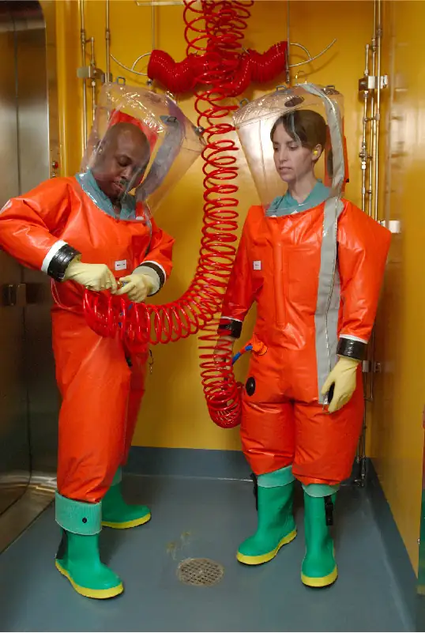
![Table labeled biosafety levels. The CDC classifies low risk microbes as BSL-1 and high risk microbes as BSL-4. Biosafety level-4 is used when microbes are dangerous and exotic, posing a high risk of aerosol-transmitted infections, which are frequently fatal without treatment or vaccines. Few labs at this level. Examples include ebola and Marburg viruses. BSL-3 is used when microbes are indigenous or exotic and cause serious or potentially lethal diseases through respiratory transmission. Examples include Mycobacterium tuberculosis. BSL-2 is used when microbes are typically indigenous and are associated with diseases of varying severity. They pose moderate risk to workers and the environment. Examples include Staphylococcus aureus. BSL-1 is used when microbes are not knows to cause disease in healthy hosts and pose minimal risk to workers and environment. Examples include nonpathogenic strains of Escherichia coli.](img/osc-microbio-13-01-bsls.webp)
Link to Learning
To learn more about the four BSLs, visit the CDC’s website.
Check Your Understanding
- What are some factors used to determine the BSL necessary for working with a specific pathogen?
Sterilization¶
The most extreme protocols for microbial control aim to achieve sterilization: the complete removal or killing of all vegetative cells, endospores, and viruses from the targeted item or environment. Sterilization protocols are generally reserved for laboratory, medical, manufacturing, and food industry settings, where it may be imperative for certain items to be completely free of potentially infectious agents. Sterilization can be accomplished through either physical means, such as exposure to high heat, pressure, or filtration through an appropriate filter, or by chemical means. Chemicals that can be used to achieve sterilization are called sterilants. Sterilants effectively kill all microbes and viruses, and, with appropriate exposure time, can also kill endospores.
For many clinical purposes, aseptic technique is necessary to prevent contamination of sterile surfaces. Aseptic technique involves a combination of protocols that collectively maintain sterility, or asepsis, thus preventing contamination of the patient with microbes and infectious agents. Failure to practice aseptic technique during many types of clinical procedures may introduce microbes to the patient’s body and put the patient at risk for sepsis, a systemic inflammatory response to an infection that results in high fever, increased heart and respiratory rates, shock, and, possibly, death. Medical procedures that carry risk of contamination must be performed in a sterile field, a designated area that is kept free of all vegetative microbes, endospores, and viruses. Sterile fields are created according to protocols requiring the use of sterilized materials, such as packaging and drapings, and strict procedures for washing and application of sterilants. Other protocols are followed to maintain the sterile field while the medical procedure is being performed.
One food sterilization protocol, commercial sterilization, uses heat at a temperature low enough to preserve food quality but high enough to destroy common pathogens responsible for food poisoning, such as C. botulinum. Because C. botulinum and its endospores are commonly found in soil, they may easily contaminate crops during harvesting, and these endospores can later germinate within the anaerobic environment once foods are canned. Metal cans of food contaminated with C. botulinum will bulge due to the microbe’s production of gases; contaminated jars of food typically bulge at the metal lid. To eliminate the risk for C. botulinum contamination, commercial food-canning protocols are designed with a large margin of error. They assume an impossibly large population of endospores (1012 per can) and aim to reduce this population to 1 endospore per can to ensure the safety of canned foods. For example, low- and medium-acid foods are heated to 121 °C for a minimum of 2.52 minutes, which is the time it would take to reduce a population of 1012 endospores per can down to 1 endospore at this temperature. Even so, commercial sterilization does not eliminate the presence of all microbes; rather, it targets those pathogens that cause spoilage and foodborne diseases, while allowing many nonpathogenic organisms to survive. Therefore, “sterilization” is somewhat of a misnomer in this context, and commercial sterilization may be more accurately described as “quasi-sterilization.”
Check Your Understanding
- What is the difference between sterilization and aseptic technique?
Link to Learning
The Association of Surgical Technologists publishes standards for aseptic technique, including creating and maintaining a sterile field.
Other Methods of Control¶
Sterilization protocols require procedures that are not practical, or necessary, in many settings. Various other methods are used in clinical and nonclinical settings to reduce the microbial load on items. Although the terms for these methods are often used interchangeably, there are important distinctions (Figure 13.4).
The process of disinfection inactivates most microbes on the surface of a fomite by using antimicrobial chemicals or heat. Because some microbes remain, the disinfected item is not considered sterile. Ideally, disinfectants should be fast acting, stable, easy to prepare, inexpensive, and easy to use. An example of a natural disinfectant is vinegar; its acidity kills most microbes. Chemical disinfectants, such as chlorine bleach or products containing chlorine, are used to clean nonliving surfaces such as laboratory benches, clinical surfaces, and bathroom sinks. Typical disinfection does not lead to sterilization because endospores tend to survive even when all vegetative cells have been killed.
Unlike disinfectants, antiseptics are antimicrobial chemicals safe for use on living skin or tissues. Examples of antiseptics include hydrogen peroxide and isopropyl alcohol. The process of applying an antiseptic is called antisepsis. In addition to the characteristics of a good disinfectant, antiseptics must also be selectively effective against microorganisms and able to penetrate tissue deeply without causing tissue damage.
The type of protocol required to achieve the desired level of cleanliness depends on the particular item to be cleaned. For example, those used clinically are categorized as critical, semicritical, and noncritical. Critical items must be sterile because they will be used inside the body, often penetrating sterile tissues or the bloodstream; examples of critical items include surgical instruments, catheters, and intravenous fluids. Gastrointestinal endoscopes and various types of equipment for respiratory therapies are examples of semicritical items; they may contact mucous membranes or nonintact skin but do not penetrate tissues. Semicritical items do not typically need to be sterilized but do require a high level of disinfection. Items that may contact but not penetrate intact skin are noncritical items; examples are bed linens, furniture, crutches, stethoscopes, and blood pressure cuffs. These articles need to be clean but not highly disinfected.
The act of handwashing is an example of degerming, in which microbial numbers are significantly reduced by gently scrubbing living tissue, most commonly skin, with a mild chemical (e.g., soap) to avoid the transmission of pathogenic microbes. Wiping the skin with an alcohol swab at an injection site is another example of degerming. These degerming methods remove most (but not all) microbes from the skin’s surface.
The term sanitization refers to the cleansing of fomites to remove enough microbes to achieve levels deemed safe for public health. For example, commercial dishwashers used in the food service industry typically use very hot water and air for washing and drying; the high temperatures kill most microbes, sanitizing the dishes. Surfaces in hospital rooms are commonly sanitized using a chemical disinfectant to prevent disease transmission between patients. Figure 13.4 summarizes common protocols, definitions, applications, and agents used to control microbial growth.
![A table titled: Common protocols for control of microbial growth. Four columns: protocol, definition, common application and common agents. The table is divided by protocols used for fomites and those used on living tissue. Protocols for fomites include disinfection, sanitation, and sterilization. Disinfection reduces or destroys microbial load of an inanimate item through application of heat or antimicrobial chemicals. Disinfection involves cleaning surfaces like laboratory benches, clinical surfaces, and bathrooms and uses Chlorine bleach, phenols (e.g., Lysol), glutaraldehyde. Sanitization reduces microbial load of an inanimate item to safe public health levels through application of heat or antimicrobial chemicals. Sanitation involves Commercial dishwashing of eating utensils, cleaning public restrooms and uses Detergents containing phosphates (e.g., Finish), industrial-strength cleaners containing quaternary ammonium compounds. Sterilization Completely eliminates all vegetative cells, endospores, and viruses from an inanimate item. Sterilization involves Preparation of surgical equipment and of needles used for injection and uses Pressurized steam (autoclave), chemicals, radiation. Protocols for living tissue include antisepsis and degerming. Antisepsis Reduces microbial load on skin or tissue through application of an antimicrobial chemical. Antisepsis involves Cleaning skin broken due to injury; cleaning skin before surgery and uses Boric acid, isopropyl alcohol, hydrogen peroxide, iodine (betadine). Degerming Reduces microbial load on skin or tissue through gentle to firm scrubbing and the use of mild chemicals. Degerming involves Handwashing and uses Soap, alcohol swab.](img/osc-microbio-13-01-controltbl.webp)
Check Your Understanding
- What is the difference between a disinfectant and an antiseptic?
- Which is most effective at removing microbes from a product: sanitization, degerming, or sterilization? Explain.
Clinical Focus: Part 2
Roberta’s physician suspected that a bacterial infection was responsible for her sudden-onset high fever, abdominal pain, and bloody urine. Based on these symptoms, the physician diagnosed a urinary tract infection (UTI). A wide variety of bacteria may cause UTIs, which typically occur when bacteria from the lower gastrointestinal tract are introduced to the urinary tract. However, Roberta’s recent gallstone surgery caused the physician to suspect that she had contracted a nosocomial (hospital-acquired) infection during her surgery. The physician took a urine sample and ordered a urine culture to check for the presence of white blood cells, red blood cells, and bacteria. The results of this test would help determine the cause of the infection. The physician also prescribed a course of the antibiotic ciprofloxacin, confident that it would clear Roberta’s infection.
- What are some possible ways that bacteria could have been introduced to Roberta’s urinary tract during her surgery?
Jump to the next Clinical Focus box. Go back to the previous Clinical Focus box.
Measuring Microbial Control¶
Physical and chemical methods of microbial control that kill the targeted microorganism are identified by the suffix -cide (or -cidal). The prefix indicates the type of microbe or infectious agent killed by the treatment method: bactericides kill bacteria, viricides kill or inactivate viruses, and fungicides kill fungi. Other methods do not kill organisms but, instead, stop their growth, making their population static; such methods are identified by the suffix -stat (or -static). For example, bacteriostatic treatments inhibit the growth of bacteria, whereas fungistatic treatments inhibit the growth of fungi. Factors that determine whether a particular treatment is -cidal or -static include the types of microorganisms targeted, the concentration of the chemical used, and the nature of the treatment applied.
Although -static treatments do not actually kill infectious agents, they are often less toxic to humans and other animals, and may also better preserve the integrity of the item treated. Such treatments are typically sufficient to keep the microbial population of an item in check. The reduced toxicity of some of these -static chemicals also allows them to be impregnated safely into plastics to prevent the growth of microbes on these surfaces. Such plastics are used in products such as toys for children and cutting boards for food preparation. When used to treat an infection, -static treatments are typically sufficient in an otherwise healthy individual, preventing the pathogen from multiplying, thus allowing the individual’s immune system to clear the infection.
The degree of microbial control can be evaluated using a microbial death curve to describe the progress and effectiveness of a particular protocol. When exposed to a particular microbial control protocol, a fixed percentage of the microbes within the population will die. Because the rate of killing remains constant even when the population size varies, the percentage killed is more useful information than the absolute number of microbes killed. Death curves are often plotted as semilog plots just like microbial growth curves because the reduction in microorganisms is typically logarithmic (Figure 13.5). The amount of time it takes for a specific protocol to produce a one order-of-magnitude decrease in the number of organisms, or the death of 90% of the population, is called the decimal reduction time (DRT) or D-value.
![A table showing a decrease in number as microbial cells die. At time 0 there are 10 to the 10 cells. At time 5 there are 10 to the 9 cells. At time 10 there are 10 to the 8 cells. At time 15there are 10 to the 7 cells. At time 20 there are 10 to the 6 cells. At time 25 there are 10 to the 5 cells. At time 30 there are 10 to the 4 cells. At time 35 there are 10 to the 3 cells. At time 40 there are 10 to the 2 cells. At time 45 there are 10 to the 1 cells. At time 50 there are 10 to the 0 cells. A graph titled microbial death curve. The X axis is time and the Y axis is number of cells. Two lines indicate what this graph looks like using an arithmetic and logarithmic scale. Both lines begin at 10 to the 10 at time 0. The arithmetic scale drops quickly and is indistinguishable from 0 by 10 minutes. The logarithmic scale slopes at a clean diagonal. The D value is shown as the time it takes to move from 10 to the 6 to 10 to the 5; this occurs in 5 minutes.](img/osc-microbio-13-01-mdc.webp)
Several factors contribute to the effectiveness of a disinfecting agent or microbial control protocol. First, as demonstrated in Figure 13.5, the length of time of exposure is important. Longer exposure times kill more microbes. Because microbial death of a population exposed to a specific protocol is logarithmic, it takes longer to kill a high-population load than a low-population load exposed to the same protocol. A shorter treatment time (measured in multiples of the D-value) is needed when starting with a smaller number of organisms. Effectiveness also depends on the susceptibility of the agent to that disinfecting agent or protocol. The concentration of disinfecting agent or intensity of exposure is also important. For example, higher temperatures and higher concentrations of disinfectants kill microbes more quickly and effectively. Conditions that limit contact between the agent and the targeted cells cells—for example, the presence of bodily fluids, tissue, organic debris (e.g., mud or feces), or biofilms on surfaces—increase the cleaning time or intensity of the microbial control protocol required to reach the desired level of cleanliness. All these factors must be considered when choosing the appropriate protocol to control microbial growth in a given situation.
Check Your Understanding
- What are two possible reasons for choosing a bacteriostatic treatment over a bactericidal one?
- Name at least two factors that can compromise the effectiveness of a disinfecting agent.
13.2 Using Physical Methods to Control Microorganisms¶
Learning Objectives
By the end of this section, you will be able to:
- Understand and compare various physical methods of controlling microbial growth, including heating, refrigeration, freezing, high-pressure treatment, desiccation, lyophilization, irradiation, and filtration
For thousands of years, humans have used various physical methods of microbial control for food preservation. Common control methods include the application of high temperatures, radiation, filtration, and desiccation (drying), among others. Many of these methods nonspecifically kill cells by disrupting membranes, changing membrane permeability, or damaging proteins and nucleic acids by denaturation, degradation, or chemical modification. Various physical methods used for microbial control are described in this section.
Heat¶
Heating is one of the most common—and oldest—forms of microbial control. It is used in simple techniques like cooking and canning. Heat can kill microbes by altering their membranes and denaturing proteins. The thermal death point (TDP) of a microorganism is the lowest temperature at which all microbes are killed in a 10-minute exposure. Different microorganisms will respond differently to high temperatures, with some (e.g., endospore-formers such as C. botulinum) being more heat tolerant. A similar parameter, the thermal death time (TDT), is the length of time needed to kill all microorganisms in a sample at a given temperature. These parameters are often used to describe sterilization procedures that use high heat, such as autoclaving. Boiling is one of the oldest methods of moist-heat control of microbes, and it is typically quite effective at killing vegetative cells and some viruses. However, boiling is less effective at killing endospores; some endospores are able to survive up to 20 hours of boiling. Additionally, boiling may be less effective at higher altitudes, where the boiling point of water is lower and the boiling time needed to kill microbes is therefore longer. For these reasons, boiling is not considered a useful sterilization technique in the laboratory or clinical setting.
Many different heating protocols can be used for sterilization in the laboratory or clinic, and these protocols can be broken down into two main categories: dry-heat sterilization and moist-heat sterilization. Aseptic technique in the laboratory typically involves some dry-heat sterilization protocols using direct application of high heat, such as sterilizing inoculating loops (Figure 13.6). Incineration at very high temperatures destroys all microorganisms. Dry heat can also be applied for relatively long periods of time (at least 2 hours) at temperatures up to 170 °C by using a dry-heat sterilizer, such as an oven. However, moist-heat sterilization is typically the more effective protocol because it penetrates cells better than dry heat does.
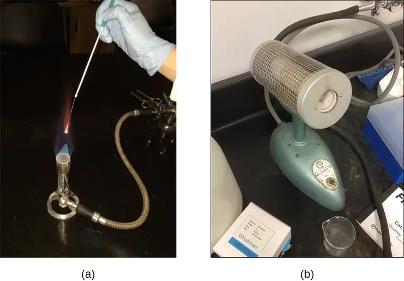
Autoclaves¶
Autoclaves rely on moist-heat sterilization. They are used to raise temperatures above the boiling point of water to sterilize items such as surgical equipment from vegetative cells, viruses, and especially endospores, which are known to survive boiling temperatures, without damaging the items. Charles Chamberland (1851–1908) designed the modern autoclave in 1879 while working in the laboratory of Louis Pasteur. The autoclave is still considered the most effective method of sterilization (Figure 13.7). Outside laboratory and clinical settings, large industrial autoclaves called retorts allow for moist-heat sterilization on a large scale.
In general, the air in the chamber of an autoclave is removed and replaced with increasing amounts of steam trapped within the enclosed chamber, resulting in increased interior pressure and temperatures above the boiling point of water. The two main types of autoclaves differ in the way that air is removed from the chamber. In gravity displacement autoclaves, steam is introduced into the chamber from the top or sides. Air, which is heavier than steam, sinks to the bottom of the chamber, where it is forced out through a vent. Complete displacement of air is difficult, especially in larger loads, so longer cycles may be required for such loads. In prevacuum sterilizers, air is removed completely using a high-speed vacuum before introducing steam into the chamber. Because air is more completely eliminated, the steam can more easily penetrate wrapped items. Many autoclaves are capable of both gravity and prevacuum cycles, using the former for the decontamination of waste and sterilization of media and unwrapped glassware, and the latter for sterilization of packaged instruments.
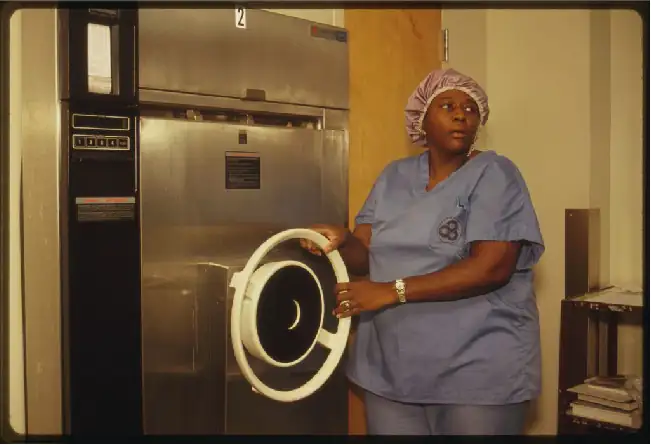
Standard operating temperatures for autoclaves are 121 °C or, in some cases, 132 °C, typically at a pressure of 15 to 20 pounds per square inch (psi). The length of exposure depends on the volume and nature of material being sterilized, but it is typically 20 minutes or more, with larger volumes requiring longer exposure times to ensure sufficient heat transfer to the materials being sterilized. The steam must directly contact the liquids or dry materials being sterilized, so containers are left loosely closed and instruments are loosely wrapped in paper or foil. The key to autoclaving is that the temperature must be high enough to kill endospores to achieve complete sterilization.
Because sterilization is so important to safe medical and laboratory protocols, quality control is essential. Autoclaves may be equipped with recorders to document the pressures and temperatures achieved during each run. Additionally, internal indicators of various types should be autoclaved along with the materials to be sterilized to ensure that the proper sterilization temperature has been reached (Figure 13.8). One common type of indicator is the use of heat-sensitive autoclave tape, which has white stripes that turn black when the appropriate temperature is achieved during a successful autoclave run. This type of indicator is relatively inexpensive and can be used during every run. However, autoclave tape provides no indication of length of exposure, so it cannot be used as an indicator of sterility. Another type of indicator, a biological indicator spore test, uses either a strip of paper or a liquid suspension of the endospores of Geobacillus stearothermophilus to determine whether the endospores are killed by the process. The endospores of the obligate thermophilic bacterium G. stearothermophilus are the gold standard used for this purpose because of their extreme heat resistance. Biological spore indicators can also be used to test the effectiveness of other sterilization protocols, including ethylene oxide, dry heat, formaldehyde, gamma radiation, and hydrogen peroxide plasma sterilization using either G. stearothermophilus, Bacillus atrophaeus, B. subtilis, or B. pumilus spores. In the case of validating autoclave function, the endospores are incubated after autoclaving to ensure no viable endospores remain. Bacterial growth subsequent to endospore germination can be monitored by biological indicator spore tests that detect acid metabolites or fluorescence produced by enzymes derived from viable G. stearothermophilus. A third type of autoclave indicator is the Diack tube, a glass ampule containing a temperature-sensitive pellet that melts at the proper sterilization temperature. Spore strips or Diack tubes are used periodically to ensure the autoclave is functioning properly.
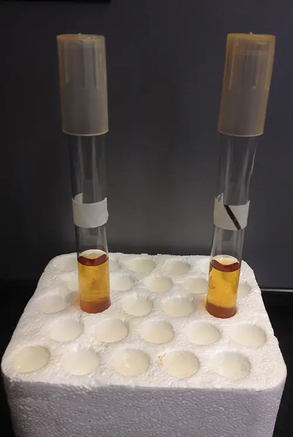
Pasteurization¶
Although complete sterilization is ideal for many medical applications, it is not always practical for other applications and may also alter the quality of the product. Boiling and autoclaving are not ideal ways to control microbial growth in many foods because these methods may ruin the consistency and other organoleptic (sensory) qualities of the food. Pasteurization is a form of microbial control for food that uses heat but does not render the food sterile. Traditional pasteurization kills pathogens and reduces the number of spoilage-causing microbes while maintaining food quality. The process of pasteurization was first developed by Louis Pasteur in the 1860s as a method for preventing the spoilage of beer and wine. Today, pasteurization is most commonly used to kill heat-sensitive pathogens in milk and other food products (e.g., apple juice and honey) (Figure 13.9). However, because pasteurized food products are not sterile, they will eventually spoil.
The methods used for milk pasteurization balance the temperature and the length of time of treatment. One method, high-temperature short-time (HTST) pasteurization, exposes milk to a temperature of 72 °C for 15 seconds, which lowers bacterial numbers while preserving the quality of the milk. An alternative is ultra-high-temperature (UHT) pasteurization, in which the milk is exposed to a temperature of 138 °C for 2 or more seconds. UHT pasteurized milk can be stored for a long time in sealed containers without being refrigerated; however, the very high temperatures alter the proteins in the milk, causing slight changes in the taste and smell. Still, this method of pasteurization is advantageous in regions where access to refrigeration is limited.
![Pasteurization shows an image of a large machine. To the left is HTST pasteurization where milk is heated at 72 degrees C for 15 seconds, then boiled and refrigerated. To the right is UHT pasteurization where milk is heated at 138 degrees C for 2 or more seconds, then sealed in airtight containers for up to 90 days without refrigeration. To the bottom is the following test: milkborne organisms killed by pasteurization: Campylobacter jejuni, Coxiella burnetii, Listeria monocytogenes, Escherichia coli O157:H7, Mycobacterium tuberculosis, M. paratuberculosis, Salmonella spp., Yersinia enterocolitica.](img/osc-microbio-13-02-pasteurize.webp)
Check Your Understanding
- In an autoclave, how are temperatures above boiling achieved?
- How would the onset of spoilage compare between HTST-pasteurized and UHT-pasteurized milk?
- Why is boiling not used as a sterilization method in a clinical setting?
Refrigeration and Freezing¶
Just as high temperatures are effective for controlling microbial growth, exposing microbes to low temperatures can also be an easy and effective method of microbial control, with the exception of psychrophiles, which prefer cold temperatures (see Temperature and Microbial Growth). Refrigerators used in home kitchens or in the laboratory maintain temperatures between 0 °C and 7 °C. This temperature range inhibits microbial metabolism, slowing the growth of microorganisms significantly and helping preserve refrigerated products such as foods or medical supplies. Certain types of laboratory cultures can be preserved by refrigeration for later use.
Freezing below −2 °C may stop microbial growth and even kill susceptible organisms. According to the US Department of Agriculture (USDA), the only safe ways that frozen foods can be thawed are in the refrigerator, immersed in cold water changed every 30 minutes, or in the microwave, keeping the food at temperatures not conducive for bacterial growth.3 In addition, halted bacterial growth can restart in thawed foods, so thawed foods should be treated like fresh perishables.
Bacterial cultures and medical specimens requiring long-term storage or transport are often frozen at ultra-low temperatures of −70 °C or lower. These ultra-low temperatures can be achieved by storing specimens on dry ice in an ultra-low freezer or in special liquid nitrogen tanks, which maintain temperatures lower than −196 °C (Figure 13.10).
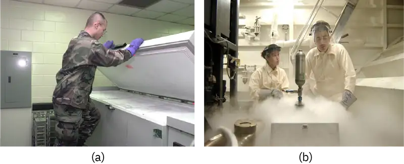
Check Your Understanding
- Does placing food in a refrigerator kill bacteria on the food?
Pressure¶
Exposure to high pressure kills many microbes. In the food industry, high-pressure processing (also called pascalization) is used to kill bacteria, yeast, molds, parasites, and viruses in foods while maintaining food quality and extending shelf life. The application of high pressure between 100 and 800 MPa (sea level atmospheric pressure is about 0.1 MPa) is sufficient to kill vegetative cells by protein denaturation, but endospores may survive these pressures.45
In clinical settings, hyperbaric oxygen therapy is sometimes used to treat infections. In this form of therapy, a patient breathes pure oxygen at a pressure higher than normal atmospheric pressure, typically between 1 and 3 atmospheres (atm). This is achieved by placing the patient in a hyperbaric chamber or by supplying the pressurized oxygen through a breathing tube. Hyperbaric oxygen therapy helps increase oxygen saturation in tissues that become hypoxic due to infection and inflammation. This increased oxygen concentration enhances the body’s immune response by increasing the activities of neutrophils and macrophages, white blood cells that fight infections. Increased oxygen levels also contribute to the formation of toxic free radicals that inhibit the growth of oxygen-sensitive or anaerobic bacteria like as Clostridium perfringens, a common cause of gas gangrene. In C. perfringens infections, hyperbaric oxygen therapy can also reduce secretion of a bacterial toxin that causes tissue destruction. Hyperbaric oxygen therapy also seems to enhance the effectiveness of antibiotic treatments. Unfortunately, some rare risks include oxygen toxicity and effects on delicate tissues, such as the eyes, middle ear, and lungs, which may be damaged by the increased air pressure.
High pressure processing is not commonly used for disinfection or sterilization of fomites. Although the application of pressure and steam in an autoclave is effective for killing endospores, it is the high temperature achieved, and not the pressure directly, that results in endospore death.
Case in Point: A Streak of Bad Potluck
One Monday in spring 2015, an Ohio woman began to experience blurred, double vision; difficulty swallowing; and drooping eyelids. She was rushed to the emergency department of her local hospital. During the examination, she began to experience abdominal cramping, nausea, paralysis, dry mouth, weakness of facial muscles, and difficulty speaking and breathing. Based on these symptoms, the hospital’s incident command center was activated, and Ohio public health officials were notified of a possible case of botulism. Meanwhile, other patients with similar symptoms began showing up at other local hospitals. Because of the suspicion of botulism, antitoxin was shipped overnight from the CDC to these medical facilities, to be administered to the affected patients. The first patient died of respiratory failure as a result of paralysis, and about half of the remaining victims required additional hospitalization following antitoxin administration, with at least two requiring ventilators for breathing.
Public health officials investigated each of the cases and determined that all of the patients had attended the same church potluck the day before. Moreover, they traced the source of the outbreak to a potato salad made with home-canned potatoes. More than likely, the potatoes were canned using boiling water, a method that allows endospores of Clostridium botulinum to survive. C. botulinum produces botulinum toxin, a neurotoxin that is often deadly once ingested. According to the CDC, the Ohio case was the largest botulism outbreak in the United States in nearly 40 years.6
Killing C. botulinum endospores requires a minimum temperature of 116 °C (240 °F), well above the boiling point of water. This temperature can only be reached in a pressure canner, which is recommended for home canning of low-acid foods such as meat, fish, poultry, and vegetables (Figure 13.11). Additionally, the CDC recommends boiling home-canned foods for about 10 minutes before consumption. Since the botulinum toxin is heat labile (meaning that it is denatured by heat), 10 minutes of boiling will render nonfunctional any botulinum toxin that the food may contain.
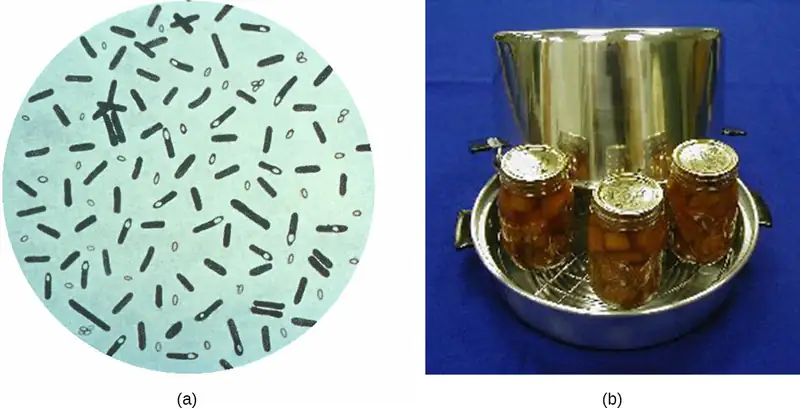
Link to Learning
To learn more about proper home-canning techniques, visit the CDC’s website.
Desiccation¶
Drying, also known as desiccation or dehydration, is a method that has been used for millennia to preserve foods such as raisins, prunes, and jerky. It works because all cells, including microbes, require water for their metabolism and survival. Although drying controls microbial growth, it might not kill all microbes or their endospores, which may start to regrow when conditions are more favorable and water content is restored.
In some cases, foods are dried in the sun, relying on evaporation to achieve desiccation. Freeze-drying, or lyophilization, is another method of dessication in which an item is rapidly frozen (“snap-frozen”) and placed under vacuum so that water is lost by sublimation. Lyophilization combines both exposure to cold temperatures and desiccation, making it quite effective for controlling microbial growth. In addition, lyophilization causes less damage to an item than conventional desiccation and better preserves the item’s original qualities. Lyophilized items may be stored at room temperature if packaged appropriately to prevent moisture acquisition. Lyophilization is used for preservation in the food industry and is also used in the laboratory for the long-term storage and transportation of microbial cultures.
The water content of foods and materials, called the water activity, can be lowered without physical drying by the addition of solutes such as salts or sugars. At very high concentrations of salts or sugars, the amount of available water in microbial cells is reduced dramatically because water will be drawn from an area of low solute concentration (inside the cell) to an area of high solute concentration (outside the cell) (Figure 13.12). Many microorganisms do not survive these conditions of high osmotic pressure. Honey, for example, is 80% sucrose, an environment in which very few microorganisms are capable of growing, thereby eliminating the need for refrigeration. Salted meats and fish, like ham and cod, respectively, were critically important foods before the age of refrigeration. Fruits were preserved by adding sugar, making jams and jellies. However, certain microbes, such as molds and yeasts, tend to be more tolerant of desiccation and high osmotic pressures, and, thus, may still contaminate these types of foods.
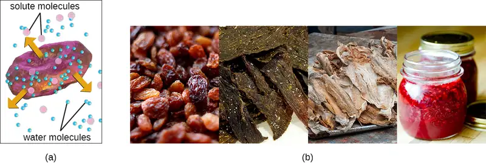
Check Your Understanding
- How does the addition of salt or sugar to food affect its water activity?
Radiation¶
Radiation in various forms, from high-energy radiation to sunlight, can be used to kill microbes or inhibit their growth. Ionizing radiation includes X-rays, gamma rays, and high-energy electron beams. Ionizing radiation is strong enough to pass into the cell, where it alters molecular structures and damages cell components. For example, ionizing radiation introduces double-strand breaks in DNA molecules. This may directly cause DNA mutations to occur, or mutations may be introduced when the cell attempts to repair the DNA damage. As these mutations accumulate, they eventually lead to cell death.
Both X-rays and gamma rays easily penetrate paper and plastic and can therefore be used to sterilize many packaged materials. In the laboratory, ionizing radiation is commonly used to sterilize materials that cannot be autoclaved, such as plastic Petri dishes and disposable plastic inoculating loops. For clinical use, ionizing radiation is used to sterilize gloves, intravenous tubing, and other latex and plastic items used for patient care. Ionizing radiation is also used for the sterilization of other types of delicate, heat-sensitive materials used clinically, including tissues for transplantation, pharmaceutical drugs, and medical equipment.
In Europe, gamma irradiation for food preservation is widely used, although it has been slow to catch on in the United States (see the Micro Connections box on this topic). Packaged dried spices are also often gamma-irradiated. Because of their ability to penetrate paper, plastic, thin sheets of wood and metal, and tissue, great care must be taken when using X-rays and gamma irradiation. These types of ionizing irradiation cannot penetrate thick layers of iron or lead, so these metals are commonly used to protect humans who may be potentially exposed.
Another type of radiation, nonionizing radiation, is commonly used for disinfection and uses less energy than ionizing radiation. It does not penetrate cells or packaging. Ultraviolet (UV) light is one example; it causes thymine dimers to form between adjacent thymines within a single strand of DNA (Figure 13.13). When DNA polymerase encounters the thymine dimer, it does not always incorporate the appropriate complementary nucleotides (two adenines), and this leads to formation of mutations that can ultimately kill microorganisms.
UV light can be used effectively by both consumers and laboratory personnel to control microbial growth. UV lamps are now commonly incorporated into water purification systems for use in homes. In addition, small portable UV lights are commonly used by campers to purify water from natural environments before drinking. Germicidal lamps are also used in surgical suites, biological safety cabinets, and transfer hoods, typically emitting UV light at a wavelength of 260 nm. Because UV light does not penetrate surfaces and will not pass through plastics or glass, cells must be exposed directly to the light source.
Sunlight has a very broad spectrum that includes UV and visible light. In some cases, sunlight can be effective against certain bacteria because of both the formation of thymine dimers by UV light and by the production of reactive oxygen products induced in low amounts by exposure to visible light.
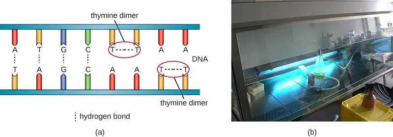
Check Your Understanding
- What are two advantages of ionizing radiation as a sterilization method?
- How does the effectiveness of ionizing radiation compare with that of nonionizing radiation?
Micro Connections: Irradiated Food: Would You Eat That?
Of all the ways to prevent food spoilage and foodborne illness, gamma irradiation may be the most unappetizing. Although gamma irradiation is a proven method of eliminating potentially harmful microbes from food, the public has yet to buy in. Most of their concerns, however, stem from misinformation and a poor understanding of the basic principles of radiation.
The most common method of irradiation is to expose food to cobalt-60 or cesium-137 by passing it through a radiation chamber on a conveyor belt. The food does not directly contact the radioactive material and does not become radioactive itself. Thus, there is no risk for exposure to radioactive material through eating gamma-irradiated foods. Additionally, irradiated foods are not significantly altered in terms of nutritional quality, aside from the loss of certain vitamins, which is also exacerbated by extended storage. Alterations in taste or smell may occur in irradiated foods with high fat content, such as fatty meats and dairy products, but this effect can be minimized by using lower doses of radiation at colder temperatures.
In the United States, the CDC, Environmental Protection Agency (EPA), and the Food and Drug Administration (FDA) have deemed irradiation safe and effective for various types of meats, poultry, shellfish, fresh fruits and vegetables, eggs with shells, and spices and seasonings. Gamma irradiation of foods has also been approved for use in many other countries, including France, the Netherlands, Portugal, Israel, Russia, China, Thailand, Belgium, Australia, and South Africa. To help ameliorate consumer concern and assist with education efforts, irradiated foods are now clearly labeled and marked with the international irradiation symbol, called the “radura” (Figure 13.14). Consumer acceptance seems to be rising, as indicated by several recent studies.7
Sonication¶
The use of high-frequency ultrasound waves to disrupt cell structures is called sonication. Application of ultrasound waves causes rapid changes in pressure within the intracellular liquid; this leads to cavitation, the formation of bubbles inside the cell, which can disrupt cell structures and eventually cause the cell to lyse or collapse. Sonication is useful in the laboratory for efficiently lysing cells to release their contents for further research; outside the laboratory, sonication is used for cleaning surgical instruments, lenses, and a variety of other objects such as coins, tools, and musical instruments.
Filtration¶
Filtration is a method of physically separating microbes from samples. Air is commonly filtered through high-efficiency particulate air (HEPA) filters (Figure 13.15). HEPA filters have effective pore sizes of 0.3 µm, small enough to capture bacterial cells, endospores, and many viruses, as air passes through these filters, nearly sterilizing the air on the other side of the filter. HEPA filters have a variety of applications and are used widely in clinical settings, in cars and airplanes, and even in the home. For example, they may be found in vacuum cleaners, heating and air-conditioning systems, and air purifiers.
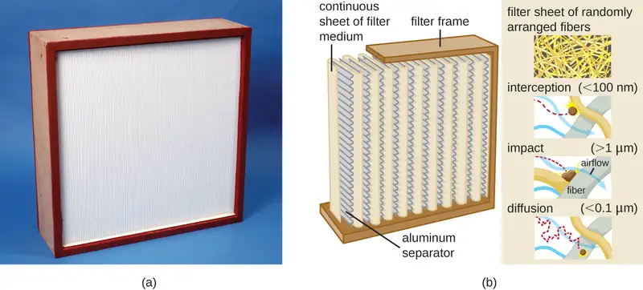
Biological Safety Cabinets¶
Biological safety cabinets are a good example of the use of HEPA filters. HEPA filters in biological safety cabinets (BSCs) are used to remove particulates in the air either entering the cabinet (air intake), leaving the cabinet (air exhaust), or treating both the intake and exhaust. Use of an air-intake HEPA filter prevents environmental contaminants from entering the BSC, creating a clean area for handling biological materials. Use of an air-exhaust HEPA filter prevents laboratory pathogens from contaminating the laboratory, thus maintaining a safe work area for laboratory personnel.
There are three classes of BSCs: I, II, and III. Each class is designed to provide a different level of protection for laboratory personnel and the environment; BSC II and III are also designed to protect the materials or devices in the cabinet. Table 13.1 summarizes the level of safety provided by each class of BSC for each BSL.
Table 13.1
| Biological Risks and BSCs | ||||
|---|---|---|---|---|
| Biological Risk Assessed | BSC Class | Protection of Personnel | Protection of Environment | Protection of Product |
| BSL-1, BSL-2, BSL-3 | I | Yes | Yes | No |
| BSL-1, BSL-2, BSL-3 | II | Yes | Yes | Yes |
| BSL-4 | III; II when used in suit room with suit | Yes | Yes | Yes |
Class I BSCs protect laboratory workers and the environment from a low to moderate risk for exposure to biological agents used in the laboratory. Air is drawn into the cabinet and then filtered before exiting through the building’s exhaust system. Class II BSCs use directional air flow and partial barrier systems to contain infectious agents. Class III BSCs are designed for working with highly infectious agents like those used in BSL-4 laboratories. They are gas tight, and materials entering or exiting the cabinet must be passed through a double-door system, allowing the intervening space to be decontaminated between uses. All air is passed through one or two HEPA filters and an air incineration system before being exhausted directly to the outdoors (not through the building’s exhaust system). Personnel can manipulate materials inside the Class III cabinet by using long rubber gloves sealed to the cabinet.
Link to Learning
This video shows how BSCs are designed and explains how they protect personnel, the environment, and the product.
Filtration in Hospitals¶
HEPA filters are also commonly used in hospitals and surgical suites to prevent contamination and the spread of airborne microbes through ventilation systems. HEPA filtration systems may be designed for entire buildings or for individual rooms. For example, burn units, operating rooms, or isolation units may require special HEPA-filtration systems to remove opportunistic pathogens from the environment because patients in these rooms are particularly vulnerable to infection.
Membrane Filters¶
Filtration can also be used to remove microbes from liquid samples using membrane filtration. Membrane filters for liquids function similarly to HEPA filters for air. Typically, membrane filters that are used to remove bacteria have an effective pore size of 0.2 µm, smaller than the average size of a bacterium (1 µm), but filters with smaller pore sizes are available for more specific needs. Membrane filtration is useful for removing bacteria from various types of heat-sensitive solutions used in the laboratory, such as antibiotic solutions and vitamin solutions. Large volumes of culture media may also be filter sterilized rather than autoclaved to protect heat-sensitive components. Often when filtering small volumes, syringe filters are used, but vacuum filters are typically used for filtering larger volumes (Figure 13.16).
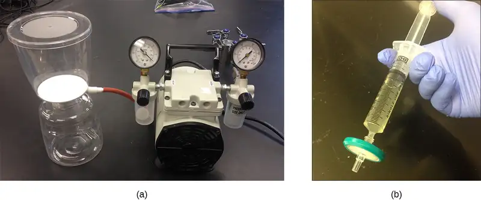
Check Your Understanding
- Would membrane filtration with a 0.2-µm filter likely remove viruses from a solution? Explain.
- Name at least two common uses of HEPA filtration in clinical or laboratory settings.
Figure 13.17 and Figure 13.18 summarize the physical methods of control discussed in this section.
![A table titled physical methods of control; 4 columns – method, conditions, mode of action, and examples of use. Groupings are: heat, cold, pressure, desiccation, radiation, sonication, and filtration. Heat. Boiling, 100 °C at sea level, Denatures proteins and alters membranes; usese Cooking, personal use, preparing certain laboratory media. Dry-heat oven, 170 °C for 2 hours, Denatures proteins and alters membranes, dehydration, desiccation; uses Sterilization of heat-stable medical and laboratory equipment and glassware. Incineration, Exposure to flame,Destroy by burning, Flaming loop, microincinerator. Autoclave, Typical settings: 121 °C for 15–40 minutes at 15 psi, Denatures proteins and alters membranes, Sterilization of microbiological media, heat-stable medical and laboratory equipment, and other heat-stable items. Pasteurization, 72 °C for 15 seconds (HTST) or 138 °C for ≥ 2 seconds (UHT), Denatures proteins and alters membranes, Prevents spoilage of milk, apple juice, honey, and other ingestible liquids. Cold. Refrigeration, 0 °C to 7 °C, Inhibits metabolism (slows or arrests cell division), Preservation of food or laboratory materials (solutions, cultures). Freezing, Below −2 °C, Stops metabolism, may kill microbes, Long-term storage of food, laboratory cultures, or medical specimens. Pressure. High-pressure processing, Exposure to pressures of 100–800 MPa, Denatures proteins and can cause cell lysis Preservation of food, Hyberbaric oxygen therapy. Inhalation of pure oxygen at a pressure of 1–3 atm, Inhibits metabolism and growth of anaerobic microbes, Treatment of certain infections (e.g., gas gangrene). Dessication. Simple desiccation, Drying, Inhibits metabolism, Dried fruits, jerky. Reduce water activity, Addition of salt or water Inhibits metabolism and can cause lysis, Salted meats and fish, honey, jams and jellies. Lyophilization, Rapid freezing under vacuum, Inhibits metabolism Preservation of food, laboratory cultures, or reagents. Radiation. Ionizing radiation, Exposure to X-rays or gamma rays, Alters molecular structures, introduces double-strand breaks into DNA, Sterilization of spices and heat-sensitive laboratory and medical items; used for food sterilization in Europe but not widely accepted in US. Nonionizing radiation, Exposure to ultraviolet light, Introduces thymine dimers, leading to mutations, Surface sterilization of laboratory materials, water purification. Sonication, Exposure to ultrasonic waves, Cavitation (formation of empty space) disrupts cells, lysing them, Laboratory research to lyse cells; cleaning jewelry, lenses, and equipment. Filtration. HEPA filtration, Use of HEPA filter with 0.3-µm pore size Physically removes microbes from air, Laboratory biological safety cabinets, operating rooms, isolation units, heating and air conditioning systems, vacuum cleaners. Membrane filtration Use of membrane filter with 0.2-µm or smaller pore size, Physically removes microbes from liquid solutions, Removal of bacteria from heat-sensitive solutions like vitamins, antibiotics, and media with heat-sensitive components.](img/osc-microbio-13-02-pmctable-a.webp)
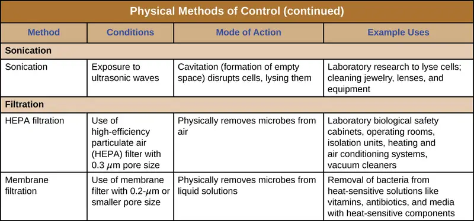
13.3 Using Chemicals to Control Microorganisms¶
Learning Objectives
By the end of this section, you will be able to:
- Understand and compare various chemicals used to control microbial growth, including their uses, advantages and disadvantages, chemical structure, and mode of action
In addition to physical methods of microbial control, chemicals are also used to control microbial growth. A wide variety of chemicals can be used as disinfectants or antiseptics. When choosing which to use, it is important to consider the type of microbe targeted; how clean the item needs to be; the disinfectant’s effect on the item’s integrity; its safety to animals, humans, and the environment; its expense; and its ease of use. This section describes the variety of chemicals used as disinfectants and antiseptics, including their mechanisms of action and common uses.
Phenolics¶
In the 1800s, scientists began experimenting with a variety of chemicals for disinfection. In the 1860s, British surgeon Joseph Lister (1827–1912) began using carbolic acid, known as phenol, as a disinfectant for the treatment of surgical wounds (see Foundations of Modern Cell Theory). In 1879, Lister’s work inspired the American chemist Joseph Lawrence (1836–1909) to develop Listerine, an alcohol-based mixture of several related compounds that is still used today as an oral antiseptic. Today, carbolic acid is no longer used as a surgical disinfectant because it is a skin irritant, but the chemical compounds found in antiseptic mouthwashes and throat lozenges are called phenolics.
Chemically, phenol consists of a benzene ring with an –OH group, and phenolics are compounds that have this group as part of their chemical structure (Figure 13.19). Phenolics such as thymol and eucalyptol occur naturally in plants. Other phenolics can be derived from creosote, a component of coal tar. Phenolics tend to be stable, persistent on surfaces, and less toxic than phenol. They inhibit microbial growth by denaturing proteins and disrupting membranes.
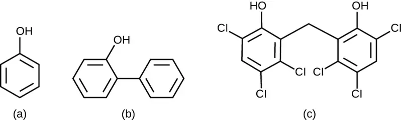
Since Lister’s time, several phenolic compounds have been used to control microbial growth. Phenolics like cresols (methylated phenols) and o-phenylphenol were active ingredients in various formulations of Lysol since its invention in 1889. o-Phenylphenol was also commonly used in agriculture to control bacterial and fungal growth on harvested crops, especially citrus fruits, but its use in the United States is now far more limited. The bisphenol hexachlorophene, a disinfectant, is the active ingredient in pHisoHex, a topical cleansing detergent widely used for handwashing in hospital settings. pHisoHex is particularly effective against gram-positive bacteria, including those causing staphylococcal and streptococcal skin infections. pHisoHex was formerly used for bathing infants, but this practice has been discontinued because it has been shown that exposure to hexachlorophene can lead to neurological problems.
Triclosan is another bisphenol compound that has seen widespread application in antibacterial products over the last several decades. Initially used in toothpastes, triclosan has also been used in hand soaps and impregnated into a wide variety of other products, including cutting boards, knives, shower curtains, clothing, and concrete, to make them antimicrobial. However, in 2016 the FDA banned the marketing of over-the-counter antiseptic products containing triclosan and 18 other chemicals. This ruling was based on the lack of evidence of safety or efficacy, as well as concerns about the health risks of long-term exposure (See Micro Connections below). In 2019 the FDA issued an updated ban ruling to included 28 chemicals. Rulings on benzalkonium chloride, ethyl alcohol, and isopropyl alcohol have been deferred to allow for the submission of additional safety and efficacy data.8
Micro Connections: Triclosan: Antibacterial Overkill?
Hand soaps and other cleaning products are often marketed as “antibacterial,” suggesting that they provide a level of cleanliness superior to that of conventional soaps and cleansers. But are the antibacterial ingredients in these products really safe and effective?
About 75% of antibacterial liquid hand soaps and 30% of bar soaps contain the chemical triclosan, a phenolic, (Figure 13.20).9 Triclosan blocks an enzyme in the bacterial fatty acid-biosynthesis pathway that is not found in the comparable human pathway. Although the use of triclosan in the home increased dramatically during the 1990s, more than 40 years of research by the FDA have turned up no conclusive evidence that washing with triclosan-containing products provides increased health benefits compared with washing with traditional soap. Although some studies indicate that fewer bacteria may remain on a person’s hands after washing with triclosan-based soap, compared with traditional soap, no evidence points to any reduction in the transmission of bacteria that cause respiratory and gastrointestinal illness. In short, soaps with triclosan may remove or kill a few more germs but not enough to reduce the spread of disease.
Perhaps more disturbing, some clear risks associated with triclosan-based soaps have come to light. The widespread use of triclosan has led to an increase in triclosan-resistant bacterial strains, including those of clinical importance, such as Salmonella enterica; this resistance may render triclosan useless as an antibacterial in the long run.1011 Bacteria can easily gain resistance to triclosan through a change to a single gene encoding the targeted enzyme in the bacterial fatty acid-synthesis pathway. Other disinfectants with a less specific mode of action are much less prone to engendering resistance because it would take much more than a single genetic change.
Use of triclosan over the last several decades has also led to a buildup of the chemical in the environment. Triclosan in hand soap is directly introduced into wastewater and sewage systems as a result of the handwashing process. There, its antibacterial properties can inhibit or kill bacteria responsible for the decomposition of sewage, causing septic systems to clog and back up. Eventually, triclosan in wastewater finds its way into surface waters, streams, lakes, sediments, and soils, disrupting natural populations of bacteria that carry out important environmental functions, such as inhibiting algae. Triclosan also finds its way into the bodies of amphibians and fish, where it can act as an endocrine disruptor. Detectable levels of triclosan have also been found in various human bodily fluids, including breast milk, plasma, and urine.12 In fact, a study conducted by the CDC found detectable levels of triclosan in the urine of 75% of 2,517 people tested in 2003–2004.13 This finding is even more troubling given the evidence that triclosan may affect immune function in humans.14
In December 2013, the FDA gave soap manufacturers until 2016 to prove that antibacterial soaps provide a significant benefit over traditional soaps; if unable to do so, manufacturers would be forced to remove these products from the market. In 2016, the FDA banned the use of triclosan and 18 other ingredients that had been used in antimicrobial soaps.
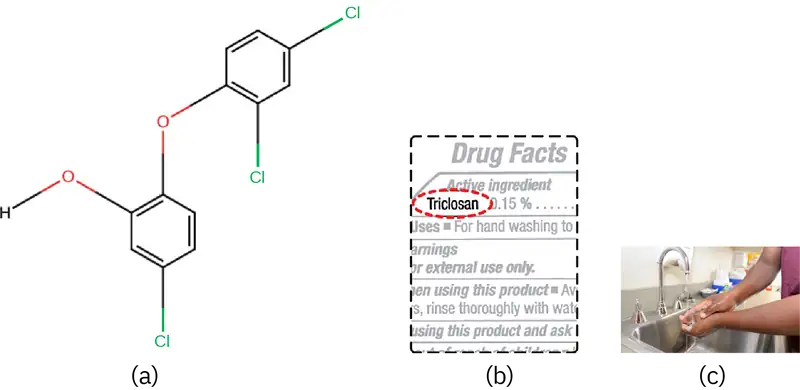
Check Your Understanding
- Why is triclosan more like an antibiotic than a traditional disinfectant?
Heavy Metals¶
Some of the first chemical disinfectants and antiseptics to be used were heavy metals. Heavy metals kill microbes by binding to proteins, thus inhibiting enzymatic activity (Figure 13.21). Heavy metals are oligodynamic, meaning that very small concentrations show significant antimicrobial activity. Ions of heavy metals bind to sulfur-containing amino acids strongly and bioaccumulate within cells, allowing these metals to reach high localized concentrations. This causes proteins to denature.
Heavy metals are not selectively toxic to microbial cells. They may bioaccumulate in human or animal cells, as well, and excessive concentrations can have toxic effects on humans. If too much silver accumulates in the body, for example, it can result in a condition called argyria, in which the skin turns irreversibly blue-gray. One way to reduce the potential toxicity of heavy metals is by carefully controlling the duration of exposure and concentration of the heavy metal.
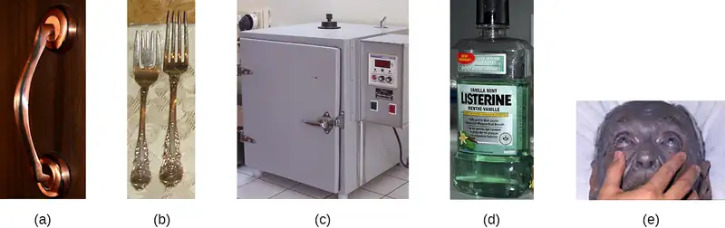
Mercury¶
Mercury is an example of a heavy metal that has been used for many years to control microbial growth. It was used for many centuries to treat syphilis. Mercury compounds like mercuric chloride are mainly bacteriostatic and have a very broad spectrum of activity. Various forms of mercury bind to sulfur-containing amino acids within proteins, inhibiting their functions.
In recent decades, the use of such compounds has diminished because of mercury’s toxicity. It is toxic to the central nervous, digestive, and renal systems at high concentrations, and has negative environmental effects, including bioaccumulation in fish. Topical antiseptics such as mercurochrome, which contains mercury in low concentrations, and merthiolate, a tincture (a solution of mercury dissolved in alcohol) were once commonly used. However, because of concerns about using mercury compounds, these antiseptics are no longer sold in the United States.
Silver¶
Silver has long been used as an antiseptic. In ancient times, drinking water was stored in silver jugs.15 Silvadene cream is commonly used to treat topical wounds and is particularly helpful in preventing infection in burn wounds. Silver nitrate drops were once routinely applied to the eyes of newborns to protect against ophthalmia neonatorum, eye infections that can occur due to exposure to pathogens in the birth canal, but antibiotic creams are more now commonly used. Silver is often combined with antibiotics, making the antibiotics thousands of times more effective.16 Silver is also commonly incorporated into catheters and bandages, rendering them antimicrobial; however, there is evidence that heavy metals may also enhance selection for antibiotic resistance.17
Copper, Nickel, and Zinc¶
Several other heavy metals also exhibit antimicrobial activity. Copper sulfate is a common algicide used to control algal growth in swimming pools and fish tanks. The use of metallic copper to minimize microbial growth is also becoming more widespread. Copper linings in incubators help reduce contamination of cell cultures. The use of copper pots for water storage in underdeveloped countries is being investigated as a way to combat diarrheal diseases. Copper coatings are also becoming popular for frequently handled objects such as doorknobs, cabinet hardware, and other fixtures in health-care facilities in an attempt to reduce the spread of microbes.
Nickel and zinc coatings are now being used in a similar way. Other forms of zinc, including zinc chloride and zinc oxide, are also used commercially. Zinc chloride is quite safe for humans and is commonly found in mouthwashes, substantially increasing their length of effectiveness. Zinc oxide is found in a variety of products, including topical antiseptic creams such as calamine lotion, diaper ointments, baby powder, and dandruff shampoos.
Check Your Understanding
- Why are many heavy metals both antimicrobial and toxic to humans?
Halogens¶
Other chemicals commonly used for disinfection are the halogens iodine, chlorine, and fluorine. Iodine works by oxidizing cellular components, including sulfur-containing amino acids, nucleotides, and fatty acids, and destabilizing the macromolecules that contain these molecules. It is often used as a topical tincture, but it may cause staining or skin irritation. An iodophor is a compound of iodine complexed with an organic molecule, thereby increasing iodine’s stability and, in turn, its efficacy. One common iodophor is povidone-iodine, which includes a wetting agent that releases iodine relatively slowly. Betadine is a brand of povidone-iodine commonly used as a hand scrub by medical personnel before surgery and for topical antisepsis of a patient’s skin before incision (Figure 13.22).
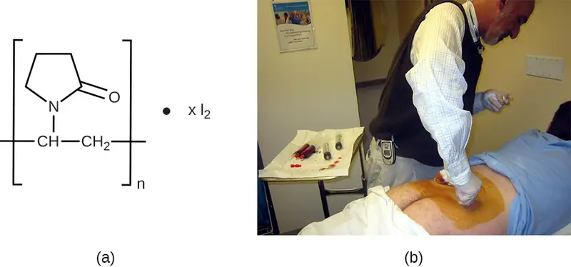
Chlorine is another halogen commonly used for disinfection. When chlorine gas is mixed with water, it produces a strong oxidant called hypochlorous acid, which is uncharged and enters cells easily. Chlorine gas is commonly used in municipal drinking water and wastewater treatment plants, with the resulting hypochlorous acid producing the actual antimicrobial effect. Those working at water treatment facilities need to take great care to minimize personal exposure to chlorine gas. Sodium hypochlorite is the chemical component of common household bleach, and it is also used for a wide variety of disinfecting purposes. Hypochlorite salts, including sodium and calcium hypochlorites, are used to disinfect swimming pools. Chlorine gas, sodium hypochlorite, and calcium hypochlorite are also commonly used disinfectants in the food processing and restaurant industries to reduce the spread of foodborne diseases. Workers in these industries also need to take care to use these products correctly to ensure their own safety as well as the safety of consumers. A recent joint statement published by the Food and Agriculture Organization (FAO) of the United Nations and WHO indicated that none of the many beneficial uses of chlorine products in food processing to reduce the spread of foodborne illness posed risks to consumers.18
Another class of chlorinated compounds called chloramines are widely used as disinfectants. Chloramines are relatively stable, releasing chlorine over long periods time. Chloramines are derivatives of ammonia by substitution of one, two, or all three hydrogen atoms with chlorine atoms (Figure 13.23).
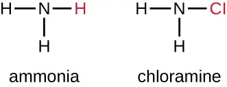
Chloramines and other cholorine compounds may be used for disinfection of drinking water, and chloramine tablets are frequently used by the military for this purpose. After a natural disaster or other event that compromises the public water supply, the CDC recommends disinfecting tap water by adding small amounts of regular household bleach. Recent research suggests that sodium dichloroisocyanurate (NaDCC) may also be a good alternative for drinking water disinfection. Currently, NaDCC tablets are available for general use and for use by the military, campers, or those with emergency needs; for these uses, NaDCC is preferable to chloramine tablets. Chlorine dioxide, a gaseous agent used for fumigation and sterilization of enclosed areas, is also commonly used for the disinfection of water.
Although chlorinated compounds are relatively effective disinfectants, they have their disadvantages. Some may irritate the skin, nose, or eyes of some individuals, and they may not completely eliminate certain hardy organisms from contaminated drinking water. The protozoan parasite Cryptosporidium, for example, has a protective outer shell that makes it resistant to chlorinated disinfectants. Thus, boiling of drinking water in emergency situations is recommended when possible.
The halogen fluorine is also known to have antimicrobial properties that contribute to the prevention of dental caries (cavities).19 Fluoride is the main active ingredient of toothpaste and is also commonly added to tap water to help communities maintain oral health. Chemically, fluoride can become incorporated into the hydroxyapatite of tooth enamel, making it more resistant to corrosive acids produced by the fermentation of oral microbes. Fluoride also enhances the uptake of calcium and phosphate ions in tooth enamel, promoting remineralization. In addition to strengthening enamel, fluoride also seems to be bacteriostatic. It accumulates in plaque-forming bacteria, interfering with their metabolism and reducing their production of the acids that contribute to tooth decay.
Check Your Understanding
- What is a benefit of a chloramine over hypochlorite for disinfecting?
Alcohols¶
Alcohols make up another group of chemicals commonly used as disinfectants and antiseptics. They work by rapidly denaturing proteins, which inhibits cell metabolism, and by disrupting membranes, which leads to cell lysis. Once denatured, the proteins may potentially refold if enough water is present in the solution. Alcohols are typically used at concentrations of about 70% aqueous solution and, in fact, work better in aqueous solutions than 100% alcohol solutions. This is because alcohols coagulate proteins. In higher alcohol concentrations, rapid coagulation of surface proteins prevents effective penetration of cells. The most commonly used alcohols for disinfection are ethyl alcohol (ethanol) and isopropyl alcohol (isopropanol, rubbing alcohol) (Figure 13.24).
Alcohols tend to be bactericidal and fungicidal, but may also be viricidal for enveloped viruses only. Although alcohols are not sporicidal, they do inhibit the processes of sporulation and germination. Alcohols are volatile and dry quickly, but they may also cause skin irritation because they dehydrate the skin at the site of application. One common clinical use of alcohols is swabbing the skin for degerming before needle injection. Alcohols also are the active ingredients in instant hand sanitizers, which have gained popularity in recent years. The alcohol in these hand sanitizers works both by denaturing proteins and by disrupting the microbial cell membrane, but will not work effectively in the presence of visible dirt.
Last, alcohols are used to make tinctures with other antiseptics, such as the iodine tinctures discussed previously in this chapter. All in all, alcohols are inexpensive and quite effective for the disinfection of a broad range of vegetative microbes. However, one disadvantage of alcohols is their high volatility, limiting their effectiveness to immediately after application.
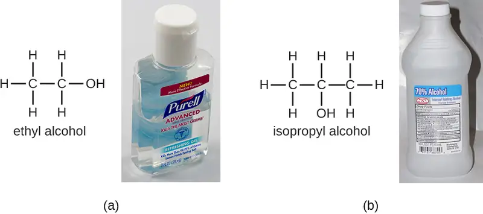
Check Your Understanding
- Name at least three advantages of alcohols as disinfectants.
- Describe several specific applications of alcohols used in disinfectant products.
Surfactants¶
Surface-active agents, or surfactants, are a group of chemical compounds that lower the surface tension of water. Surfactants are the major ingredients in soaps and detergents. Soaps are salts of long-chain fatty acids and have both polar and nonpolar regions, allowing them to interact with polar and nonpolar regions in other molecules (Figure 13.25). They can interact with nonpolar oils and grease to create emulsions in water, loosening and lifting away dirt and microbes from surfaces and skin. Soaps do not kill or inhibit microbial growth and so are not considered antiseptics or disinfectants. However, proper use of soaps mechanically carries away microorganisms, effectively degerming a surface. Some soaps contain added bacteriostatic agents such as triclocarban or cloflucarban, compounds structurally related to triclosan, that introduce antiseptic or disinfectant properties to the soaps.
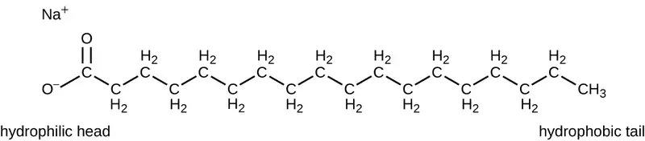
Soaps, however, often form films that are difficult to rinse away, especially in hard water, which contains high concentrations of calcium and magnesium mineral salts. Detergents contain synthetic surfactant molecules with both polar and nonpolar regions that have strong cleansing activity but are more soluble, even in hard water, and, therefore, leave behind no soapy deposits. Anionic detergents, such as those used for laundry, have a negatively charged anion at one end attached to a long hydrophobic chain, whereas cationic detergents have a positively charged cation instead. Cationic detergents include an important class of disinfectants and antiseptics called the quaternary ammonium salts (quats), named for the characteristic quaternary nitrogen atom that confers the positive charge (Figure 13.26). Overall, quats have properties similar to phospholipids, having hydrophilic and hydrophobic ends. As such, quats have the ability to insert into the bacterial phospholipid bilayer and disrupt membrane integrity. The cationic charge of quats appears to confer their antimicrobial properties, which are diminished when neutralized. Quats have several useful properties. They are stable, nontoxic, inexpensive, colorless, odorless, and tasteless. They tend to be bactericidal by disrupting membranes. They are also active against fungi, protozoans, and enveloped viruses, but endospores are unaffected. In clinical settings, they may be used as antiseptics or to disinfect surfaces. Mixtures of quats are also commonly found in household cleaners and disinfectants, including many current formulations of Lysol brand products, which contain benzalkonium chlorides as the active ingredients. Benzalkonium chlorides, along with the quat cetylpyrimidine chloride, are also found in products such as skin antiseptics, oral rinses, and mouthwashes.
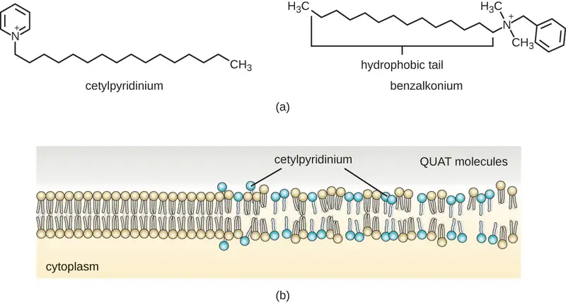
Check Your Understanding
- Why are soaps not considered disinfectants?
Micro Connections: Handwashing the Right Way
Handwashing is critical for public health and should be emphasized in a clinical setting. For the general public, the CDC recommends handwashing before, during, and after food handling; before eating; before and after interacting with someone who is ill; before and after treating a wound; after using the toilet or changing diapers; after coughing, sneezing, or blowing the nose; after handling garbage; and after interacting with an animal, its feed, or its waste. Figure 13.27 illustrates the five steps of proper handwashing recommended by the CDC.
Handwashing is even more important for health-care workers, who should wash their hands thoroughly between every patient contact, after the removal of gloves, after contact with bodily fluids and potentially infectious fomites, and before and after assisting a surgeon with invasive procedures. Even with the use of proper surgical attire, including gloves, scrubbing for surgery is more involved than routine handwashing. The goal of surgical scrubbing is to reduce the normal microbiota on the skin’s surface to prevent the introduction of these microbes into a patient’s surgical wounds.
There is no single widely accepted protocol for surgical scrubbing. Protocols for length of time spent scrubbing may depend on the antimicrobial used; health-care workers should always check the manufacturer’s recommendations. According to the Association of Surgical Technologists (AST), surgical scrubs may be performed with or without the use of brushes (Figure 13.27).
![a) CDC handwashing recommendations for the general public. 1 – wet your hands with clean, running water (warm or cold). Turn off the tap and apply soap. 2 – Lather your hands by rubbing them together with the soap. Be sure to lather the backs of your hands, between your fingers and under your nails. 3 – Scrub your hands for at least 20 seconds. Need a timer? Hum the “Happy birthday” song from beginning to end twice. 4 – Rinse your hands well under clean, running water. 5 – Dry your hands using a clean towel or air-dry them. B) A photo of a person washing their hands.](img/osc-microbio-13-03-handwashab.webp)
Link to Learning
To learn more about proper handwashing, visit the CDC’s website.
Bisbiguanides¶
Bisbiguanides were first synthesized in the 20th century and are cationic (positively charged) molecules known for their antiseptic properties (Figure 13.28). One important bisbiguanide antiseptic is chlorhexidine. It has broad-spectrum activity against yeasts, gram-positive bacteria, and gram-negative bacteria, with the exception of Pseudomonas aeruginosa, which may develop resistance on repeated exposure.20 Chlorhexidine disrupts cell membranes and is bacteriostatic at lower concentrations or bactericidal at higher concentrations, in which it actually causes the cells’ cytoplasmic contents to congeal. It also has activity against enveloped viruses. However, chlorhexidine is poorly effective against Mycobacterium tuberculosis and nonenveloped viruses, and it is not sporicidal. Chlorhexidine is typically used in the clinical setting as a surgical scrub and for other handwashing needs for medical personnel, as well as for topical antisepsis for patients before surgery or needle injection. It is more persistent than iodophors, providing long-lasting antimicrobial activity. Chlorhexidine solutions may also be used as oral rinses after oral procedures or to treat gingivitis. Another bisbiguanide, alexidine, is gaining popularity as a surgical scrub and an oral rinse because it acts faster than chlorhexidine.
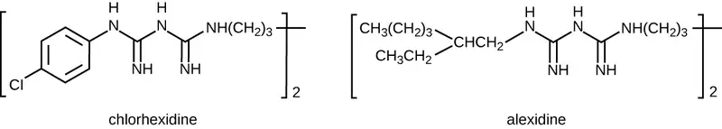
Check Your Understanding
- What two effects does chlorhexidine have on bacterial cells?
Alkylating Agents¶
The alkylating agents are a group of strong disinfecting chemicals that act by replacing a hydrogen atom within a molecule with an alkyl group (CnH2n+1), thereby inactivating enzymes and nucleic acids (Figure 13.29). The alkylating agent formaldehyde (CH2O) is commonly used in solution at a concentration of 37% (known as formalin) or as a gaseous disinfectant and biocide. It is a strong, broad-spectrum disinfectant and biocide that has the ability to kill bacteria, viruses, fungi, and endospores, leading to sterilization at low temperatures, which is sometimes a convenient alternative to the more labor-intensive heat sterilization methods. It also cross-links proteins and has been widely used as a chemical fixative. Because of this, it is used for the storage of tissue specimens and as an embalming fluid. It also has been used to inactivate infectious agents in vaccine preparation. Formaldehyde is very irritating to living tissues and is also carcinogenic; therefore, it is not used as an antiseptic.
Glutaraldehyde is structurally similar to formaldehyde but has two reactive aldehyde groups, allowing it to act more quickly than formaldehyde. It is commonly used as a 2% solution for sterilization and is marketed under the brand name Cidex. It is used to disinfect a variety of surfaces and surgical and medical equipment. However, similar to formaldehyde, glutaraldehyde irritates the skin and is not used as an antiseptic.
A new type of disinfectant gaining popularity for the disinfection of medical equipment is o-phthalaldehyde (OPA), which is found in some newer formulations of Cidex and similar products, replacing glutaraldehyde. o-Phthalaldehyde also has two reactive aldehyde groups, but they are linked by an aromatic bridge. o-Phthalaldehyde is thought to work similarly to glutaraldehyde and formaldehyde, but is much less irritating to skin and nasal passages, produces a minimal odor, does not require processing before use, and is more effective against mycobacteria.
Ethylene oxide is a type of alkylating agent that is used for gaseous sterilization. It is highly penetrating and can sterilize items within plastic bags such as catheters, disposable items in laboratories and clinical settings (like packaged Petri dishes), and other pieces of equipment. Ethylene oxide exposure is a form of cold sterilization, making it useful for the sterilization of heat-sensitive items. Great care needs to be taken with the use of ethylene oxide, however; it is carcinogenic, like the other alkylating agents, and is also highly explosive. With careful use and proper aeration of the products after treatment, ethylene oxide is highly effective, and ethylene oxide sterilizers are commonly found in medical settings for sterilizing packaged materials.
β-Propionolactone is an alkylating agent with a different chemical structure than the others already discussed. Like other alkylating agents, β-propionolactone binds to DNA, thereby inactivating it (Figure 13.29). It is a clear liquid with a strong odor and has the ability to kill endospores. As such, it has been used in either liquid form or as a vapor for the sterilization of medical instruments and tissue grafts, and it is a common component of vaccines, used to maintain their sterility. It has also been used for the sterilization of nutrient broth, as well as blood plasma, milk, and water. It is quickly metabolized by animals and humans to lactic acid. It is also an irritant, however, and may lead to permanent damage of the eyes, kidneys, or liver. Additionally, it has been shown to be carcinogenic in animals; thus, precautions are necessary to minimize human exposure to β-propionolactone.21
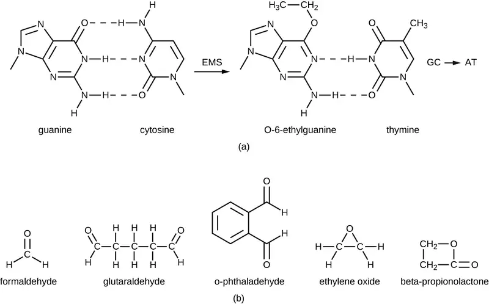
Check Your Understanding
- What chemical reaction do alkylating agents participate in?
- Why are alkylating agents not used as antiseptics?
Micro Connections: Diehard Prions
Prions, the acellular, misfolded proteins responsible for incurable and fatal diseases such as kuru and Creutzfeldt-Jakob disease (see Viroids, Virusoids, and Prions), are notoriously difficult to destroy. Prions are extremely resistant to heat, chemicals, and radiation. They are also extremely infectious and deadly; thus, handling and disposing of prion-infected items requires extensive training and extreme caution.
Typical methods of disinfection can reduce but not eliminate the infectivity of prions. Autoclaving is not completely effective, nor are chemicals such as phenol, alcohols, formalin, and β-propiolactone. Even when fixed in formalin, affected brain and spinal cord tissues remain infectious.
Personnel who handle contaminated specimens or equipment or work with infected patients must wear a protective coat, face protection, and cut-resistant gloves. Any contact with skin must be immediately washed with detergent and warm water without scrubbing. The skin should then be washed with 1 N NaOH or a 1:10 dilution of bleach for 1 minute. Contaminated waste must be incinerated or autoclaved in a strong basic solution, and instruments must be cleaned and soaked in a strong basic solution.
Link to Learning
For more information on the handling of animals and prion-contaminated materials, visit the guidelines published on the WHO website.
Peroxygens¶
Peroxygens are strong oxidizing agents that can be used as disinfectants or antiseptics. The most widely used peroxygen is hydrogen peroxide (H2O2), which is often used in solution to disinfect surfaces and may also be used as a gaseous agent. Hydrogen peroxide solutions are inexpensive skin antiseptics that break down into water and oxygen gas, both of which are environmentally safe. This decomposition is accelerated in the presence of light, so hydrogen peroxide solutions typically are sold in brown or opaque bottles. One disadvantage of using hydrogen peroxide as an antiseptic is that it also causes damage to skin that may delay healing or lead to scarring. Contact lens cleaners often include hydrogen peroxide as a disinfectant.
Hydrogen peroxide works by producing free radicals that damage cellular macromolecules. Hydrogen peroxide has broad-spectrum activity, working against gram-positive and gram-negative bacteria (with slightly greater efficacy against gram-positive bacteria), fungi, viruses, and endospores. However, bacteria that produce the oxygen-detoxifying enzymes catalase or peroxidase may have inherent tolerance to low hydrogen peroxide concentrations (Figure 13.30). To kill endospores, the length of exposure or concentration of solutions of hydrogen peroxide must be increased. Gaseous hydrogen peroxide has greater efficacy and can be used as a sterilant for rooms or equipment.
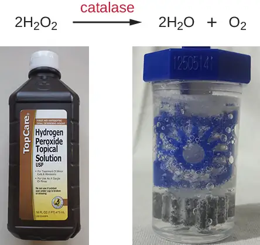
Plasma, a hot, ionized gas, described as the fourth state of matter, is useful for sterilizing equipment because it penetrates surfaces and kills vegetative cells and endospores. Hydrogen peroxide and peracetic acid, another commonly used peroxygen, each may be introduced as a plasma. Peracetic acid can be used as a liquid or plasma sterilant insofar as it readily kills endospores, is more effective than hydrogen peroxide even at rather low concentrations, and is immune to inactivation by catalases and peroxidases. It also breaks down to environmentally innocuous compounds; in this case, acetic acid and oxygen.
Other examples of peroxygens include benzoyl peroxide and carbamide peroxide. Benzoyl peroxide is a peroxygen that used in acne medication solutions. It kills the bacterium Cutibacterium acnes, which is associated with acne. Carbamide peroxide, an ingredient used in toothpaste, is a peroxygen that combats oral biofilms that cause tooth discoloration and halitosis (bad breath).22 Last, ozone gas is a peroxygen with disinfectant qualities and is used to clean air or water supplies. Overall, peroxygens are highly effective and commonly used, with no associated environmental hazard.
Check Your Understanding
- How do peroxides kill cells?
Supercritical Fluids¶
Within the last 15 years, the use of supercritical fluids, especially supercritical carbon dioxide (scCO2), has gained popularity for certain sterilizing applications. When carbon dioxide is brought to approximately 10 times atmospheric pressure, it reaches a supercritical state that has physical properties between those of liquids and gases. Materials put into a chamber in which carbon dioxide is pressurized in this way can be sterilized because of the ability of scCO2 to penetrate surfaces.
Supercritical carbon dioxide works by penetrating cells and forming carbonic acid, thereby lowering the cell pH considerably. This technique is effective against vegetative cells and is also used in combination with peracetic acid to kill endospores. Its efficacy can also be augmented with increased temperature or by rapid cycles of pressurization and depressurization, which more likely produce cell lysis.
Benefits of scCO2 include the nonreactive, nontoxic, and nonflammable properties of carbon dioxide, and this protocol is effective at low temperatures. Unlike other methods, such as heat and irradiation, that can degrade the object being sterilized, the use of scCO2 preserves the object’s integrity and is commonly used for treating foods (including spices and juices) and medical devices such as endoscopes. It is also gaining popularity for disinfecting tissues such as skin, bones, tendons, and ligaments prior to transplantation. scCO2 can also be used for pest control because it can kill insect eggs and larvae within products.
Check Your Understanding
- Why is the use of supercritical carbon dioxide gaining popularity for commercial and medical uses?
Chemical Food Preservatives¶
Chemical preservatives are used to inhibit microbial growth and minimize spoilage in some foods. Commonly used chemical preservatives include sorbic acid, benzoic acid, and propionic acid, and their more soluble salts potassium sorbate, sodium benzoate, and calcium propionate, all of which are used to control the growth of molds in acidic foods. Each of these preservatives is nontoxic and readily metabolized by humans. They are also flavorless, so they do not compromise the flavor of the foods they preserve.
Sorbic and benzoic acids exhibit increased efficacy as the pH decreases. Sorbic acid is thought to work by inhibiting various cellular enzymes, including those in the citric acid cycle, as well as catalases and peroxidases. It is added as a preservative in a wide variety of foods, including dairy, bread, fruit, and vegetable products. Benzoic acid is found naturally in many types of fruits and berries, spices, and fermented products. It is thought to work by decreasing intracellular pH, interfering with mechanisms such as oxidative phosphorylation and the uptake of molecules such as amino acids into cells. Foods preserved with benzoic acid or sodium benzoate include fruit juices, jams, ice creams, pastries, soft drinks, chewing gum, and pickles.
Propionic acid is thought to both inhibit enzymes and decrease intracellular pH, working similarly to benzoic acid. However, propionic acid is a more effective preservative at a higher pH than either sorbic acid or benzoic acid. Propionic acid is naturally produced by some cheeses during their ripening and is added to other types of cheese and baked goods to prevent mold contamination. It is also added to raw dough to prevent contamination by the bacterium Bacillus mesentericus, which causes bread to become ropy.
Other commonly used chemical preservatives include sulfur dioxide and nitrites. Sulfur dioxide prevents browning of foods and is used for the preservation of dried fruits; it has been used in winemaking since ancient times. Sulfur dioxide gas dissolves in water readily, forming sulfites. Although sulfites can be metabolized by the body, some people have sulfite allergies, including asthmatic reactions. Additionally, sulfites degrade thiamine, an important nutrient in some foods. The mode of action of sulfites is not entirely clear, but they may interfere with the disulfide bond (see Figure 7.21) formation in proteins, inhibiting enzymatic activity. Alternatively, they may reduce the intracellular pH of the cell, interfering with proton motive force-driven mechanisms.
Nitrites are added to processed meats to maintain color and stop the germination of Clostridium botulinum endospores. Nitrites are reduced to nitric oxide, which reacts with heme groups and iron-sulfur groups. When nitric oxide reacts with the heme group within the myoglobin of meats, a red product forms, giving meat its red color. Alternatively, it is thought that when nitric acid reacts with the iron-sulfur enzyme ferredoxin within bacteria, this electron transport-chain carrier is destroyed, preventing ATP synthesis. Nitrosamines, however, are carcinogenic and can be produced through exposure of nitrite-preserved meats (e.g., hot dogs, lunch meat, breakfast sausage, bacon, meat in canned soups) to heat during cooking.
Natural Chemical Food Preservatives¶
The discovery of natural antimicrobial substances produced by other microbes has added to the arsenal of preservatives used in food. Nisin is an antimicrobial peptide produced by the bacterium Lactococcus lactis and is particularly effective against gram-positive organisms. Nisin works by disrupting cell wall production, leaving cells more prone to lysis. It is used to preserve cheeses, meats, and beverages.
Natamycin is an antifungal macrolide antibiotic produced by the bacterium Streptomyces natalensis. It was approved by the FDA in 1982 and is used to prevent fungal growth in various types of dairy products, including cottage cheese, sliced cheese, and shredded cheese. Natamycin is also used for meat preservation in countries outside the United States.
Check Your Understanding
- What are the advantages and drawbacks of using sulfites and nitrites as food preservatives?
| Chemical Disinfectants | ||
|---|---|---|
| Chemical | Mode of Action | Example Uses |
| Phenolics | ||
| Cresols o-Phenylphenol Hexachlorophene Triclosan |
Denature proteins and disrupt membranes | Disinfectant in Lysol Prevent contamination of crops (citrus) Antibacterial soap pHisoHex for handwashing in hospitals |
| Metals | ||
| Mercury Silver Copper Nickel Zinc |
Bind to proteins and inhibit enzyme activity | Topical antiseptic Treatment of wounds and burns Prevention of eye infections in newborns Antibacterial in catheters and bandages Mouthwash Algicide for pools and fish tanks Containers for long-term water storage |
| Halogens | ||
| Iodine Chlorine Fluorine |
Oxidation and destabilization of cellular macromolecules | Topical antiseptic Hand scrub for medical personnel Water disinfectant Water treatment plants Household bleach Food processing Prevention of dental caries |
| Alcohols | ||
| Ethanol Isopropanol |
Denature proteins and disrupt membranes | Disinfectant Antiseptic |
| Surfactants | ||
| Quaternary ammonium salts | Lowers surface tension of water to help with washing away of microbes, and disruption of cell membranes | Soaps and detergent Disinfectant Antiseptic Mouthwash |
| Bisbiguanides | ||
| Chlorhexidine Alexidine |
Disruption of cell membranes | Oral rinse Hand scrub for medical personnel |
| Alkylating Agents | ||
| Formaldehyde Glutaraldehyde o-Phthalaldehyde Ethylene oxide β-Propionolactone |
Inactivation of enzymes and nucleic acid | Disinfectant Tissue specimen storage Embalming Sterilization of medical equipment Vaccine component for sterility |
| Peroxygens | ||
| Hydrogen peroxide Peracetic acid Benzoyl peroxide Carbamide peroxide Ozone gas |
Oxidation and destabilization of cellular macromolecules | Antiseptic Disinfectant Acne medication Toothpaste ingredient |
| Supercritical Gases | ||
| Carbon dioxide | Penetrates cells, forms carbonic acid, lowers intracellular pH | Food preservation Disinfection of medical devices Disinfection of transplant tissues |
| Chemical Food Preservatives | ||
| Sorbic acid Benzoic acid Propionic acid Potassium sorbate Sodium benzoate Calcium propionate Sulfur dioxide Nitrites |
Decrease pH and inhibit enzymatic function | Preservation of food products |
| Natural Food Preservatives | ||
| Nisin Natamycin |
Inhibition of cell wall synthesis (Nisin) | Preservation of dairy products, meats, and beverages |
13.4 Testing the Effectiveness of Antiseptics and Disinfectants¶
Learning Objectives
By the end of this section, you will be able to:
- Describe why the phenol coefficient is used
- Compare and contrast the disk-diffusion, use-dilution, and in-use methods for testing the effectiveness of antiseptics, disinfectants, and sterilants
The effectiveness of various chemical disinfectants is reflected in the terms used to describe them. Chemical disinfectants are grouped by the power of their activity, with each category reflecting the types of microbes and viruses its component disinfectants are effective against. High-level germicides have the ability to kill vegetative cells, fungi, viruses, and endospores, leading to sterilization, with extended use. Intermediate-level germicides, as their name suggests, are less effective against endospores and certain viruses, and low-level germicides kill only vegetative cells and certain enveloped viruses, and are ineffective against endospores.
However, several environmental conditions influence the potency of an antimicrobial agent and its effectiveness. For example, length of exposure is particularly important, with longer exposure increasing efficacy. Similarly, the concentration of the chemical agent is also important, with higher concentrations being more effective than lower ones. Temperature, pH, and other factors can also affect the potency of a disinfecting agent.
One method to determine the effectiveness of a chemical agent includes swabbing surfaces before and after use to confirm whether a sterile field was maintained during use. Additional tests are described in the sections that follow. These tests allow for the maintenance of appropriate disinfection protocols in clinical settings, controlling microbial growth to protect patients, health-care workers, and the community.
Phenol Coefficient¶
The effectiveness of a disinfectant or antiseptic can be determined in a number of ways. Historically, a chemical agent’s effectiveness was often compared with that of phenol, the first chemical agent used by Joseph Lister. In 1903, British chemists Samuel Rideal (1863–1929) and J. T. Ainslie Walker (1868–1930) established a protocol to compare the effectiveness of a variety of chemicals with that of phenol, using as their test organisms Staphylococcus aureus (a gram-positive bacterium) and Salmonella enterica serovar Typhi (a gram-negative bacterium). They exposed the test bacteria to the antimicrobial chemical solutions diluted in water for 7.5 minutes. They then calculated a phenol coefficient for each chemical for each of the two bacteria tested. A phenol coefficient of 1.0 means that the chemical agent has about the same level of effectiveness as phenol. A chemical agent with a phenol coefficient of less than 1.0 is less effective than phenol. An example is formalin, with phenol coefficients of 0.3 (S. aureus) and 0.7 (S. enterica serovar Typhi). A chemical agent with a phenol coefficient greater than 1.0 is more effective than phenol, such as chloramine, with phenol coefficients of 133 and 100, respectively. Although the phenol coefficient was once a useful measure of effectiveness, it is no longer commonly used because the conditions and organisms used were arbitrarily chosen.
Check Your Understanding
- What are the differences between the three levels of disinfectant effectiveness?
Disk-Diffusion Method¶
The disk-diffusion method involves applying different chemicals to separate, sterile filter paper disks (Figure 13.31). The disks are then placed on an agar plate that has been inoculated with the targeted bacterium and the chemicals diffuse out of the disks into the agar where the bacteria have been inoculated. As the “lawn” of bacteria grows, zones of inhibition of microbial growth are observed as clear areas around the disks. Although there are other factors that contribute to the sizes of zones of inhibition (e.g., whether the agent is water soluble and able to diffuse in the agar), larger zones typically correlate to increased inhibition effectiveness of the chemical agent. The diameter across each zone is measured in millimeters.
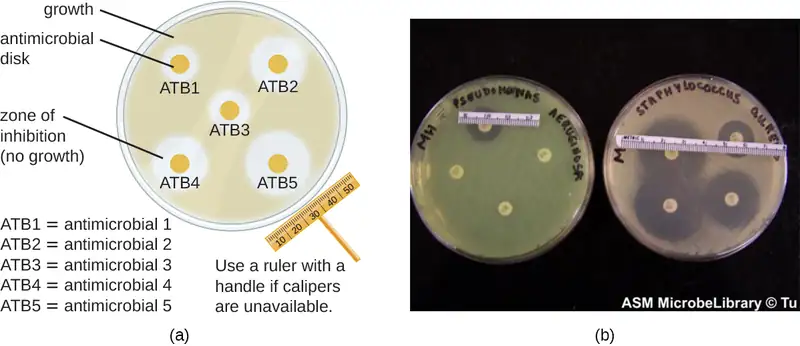
Check Your Understanding
- When comparing the activities of two disinfectants against the same microbe, using the disk-diffusion assay, and assuming both are water soluble and can easily diffuse in the agar, would a more effective disinfectant have a larger zone of inhibition or a smaller one?
Use-Dilution Test¶
Other methods are also used for measuring the effectiveness of a chemical agent in clinical settings. The use-dilution test is commonly used to determine a chemical’s disinfection effectiveness on an inanimate surface. For this test, a cylinder of stainless steel is dipped in a culture of the targeted microorganism and then dried. The cylinder is then dipped in solutions of disinfectant at various concentrations for a specified amount of time. Finally, the cylinder is transferred to a new test tube containing fresh sterile medium that does not contain disinfectant, and this test tube is incubated. Bacterial survival is demonstrated by the presence of turbidity in the medium, whereas killing of the target organism on the cylinder by the disinfectant will produce no turbidity.
The Association of Official Agricultural Chemists International (AOAC), a nonprofit group that establishes many protocol standards, has determined that a minimum of 59 of 60 replicates must show no growth in such a test to achieve a passing result, and the results must be repeatable from different batches of disinfectant and when performed on different days. Disinfectant manufacturers perform use-dilution tests to validate the efficacy claims for their products, as designated by the EPA.
Check Your Understanding
- Is the use-dilution test performed in a clinical setting? Why?
In-Use Test¶
An in-use test can determine whether an actively used solution of disinfectant in a clinical setting is microbially contaminated (Figure 13.32). A 1-mL sample of the used disinfectant is diluted into 9 mL of sterile broth medium that also contains a compound to inactivate the disinfectant. Ten drops, totaling approximately 0.2 mL of this mixture, are then inoculated onto each of two agar plates. One plate is incubated at 37 °C for 3 days and the other is incubated at room temperature for 7 days. The plates are monitored for growth of microbial colonies. Growth of five or more colonies on either plate suggests that viable microbial cells existed in the disinfectant solution and that it is contaminated. Such in-use tests monitor the effectiveness of disinfectants in the clinical setting.
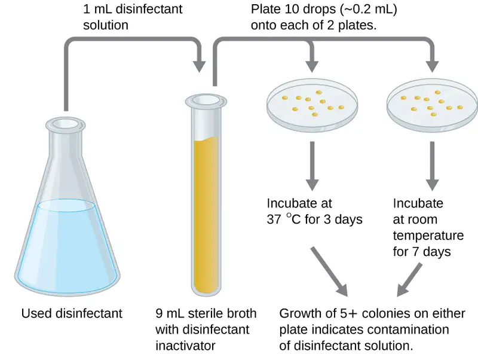
Check Your Understanding
- What does a positive in-use test indicate?
New Methods to Overcome Specific Challenges¶
Some pathogens have characteristics that make disinfectant efficacy difficult to prove. Human pappiloma virus (HPV), for example, cannot be cultured, so the previously described methods do not work. And since HPV's protein-only capsid enables it to survive on surfaces for an extended period of time, medical professionals rely on disinfectants to ensure the virus doesn't spread through facilities or equipment.
New Mexico State University's Michelle Ozbun, one of the foremost experts on HPV, developed a method to quantify (count) live virus on surfaces outside the body. The typical method for counting viruses like HPV is to grind up infected cells and measure the amount of viral DNA, but this method is imprecise and does not demonstrate the scope of the infection. To test the disinfectant's live virus was required. Instead of grinding up infected cells, Ozbun applied a stain that only attaches to viral RNA.
Using advanced microscopy, the quantities of infected cells can be determined with great accuracy. For the HVP disinfectant testing, Ozbun and her team applied various disinfectants to three HPV from three sources, and determined that the chemicals reduced the amount of virus by 10,000 times. This technique can be used for disinfectant testing for other protein-capsid viruses (like norovirus and poliovirus) and to produce accurate viral counting for other research or clinical applications.
Clinical Focus: Resolution
Despite antibiotic treatment, Roberta’s symptoms worsened. She developed pyelonephritis, a severe kidney infection, and was rehospitalized in the intensive care unit (ICU). Her condition continued to deteriorate, and she developed symptoms of septic shock. At this point, her physician ordered a culture from her urine to determine the exact cause of her infection, as well as a drug sensitivity test to determine what antibiotics would be effective against the causative bacterium. The results of this test indicated resistance to a wide range of antibiotics, including the carbapenems, a class of antibiotics that are used as the last resort for many types of bacterial infections. This was an alarming outcome, suggesting that Roberta’s infection was caused by a so-called superbug: a bacterial strain that has developed resistance to the majority of commonly used antibiotics. In this case, the causative agent belonged to the carbapenem-resistant Enterobacteriaceae (CRE), a drug-resistant family of bacteria normally found in the digestive system (Figure 13.33). When CRE is introduced to other body systems, as might occur through improperly cleaned surgical instruments, catheters, or endoscopes, aggressive infections can occur.
CRE infections are notoriously difficult to treat, with a 40%–50% fatality rate. To treat her kidney infection and septic shock, Roberta was treated with dialysis, intravenous fluids, and medications to maintain blood pressure and prevent blood clotting. She was also started on aggressive treatment with intravenous administration of a new drug called tigecycline, which has been successful in treating infections caused by drug-resistant bacteria.
After several weeks in the ICU, Roberta recovered from her CRE infection. However, public health officials soon noticed that Roberta’s case was not isolated. Several patients who underwent similar procedures at the same hospital also developed CRE infections, some dying as a result. Ultimately, the source of the infection was traced to the duodenoscopes used in the procedures. Despite the hospital staff meticulously following manufacturer protocols for disinfection, bacteria, including CRE, remained within the instruments and were introduced to patients during procedures.
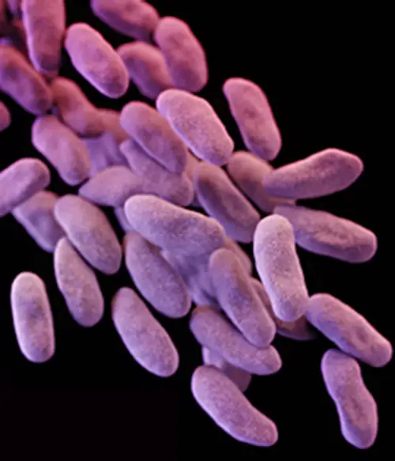
Go back to the previous Clinical Focus box.
Eye on Ethics: Who Is Responsible?
Carbapenem-resistant Enterobacteriaceae infections due to contaminated endoscopes have become a high-profile problem in recent years. Several CRE outbreaks have been traced to endoscopes, including a case at Ronald Reagan UCLA Medical Center in early 2015 in which 179 patients may have been exposed to a contaminated endoscope. Seven of the patients developed infections, and two later died. Several lawsuits have been filed against Olympus, the manufacturer of the endoscopes. Some claim that Olympus did not obtain FDA approval for design changes that may have led to contamination, and others claim that the manufacturer knowingly withheld information from hospitals concerning defects in the endoscopes.
Lawsuits like these raise difficult-to-answer questions about liability. Invasive procedures are inherently risky, but negative outcomes can be minimized by strict adherence to established protocols. Who is responsible, however, when negative outcomes occur due to flawed protocols or faulty equipment? Can hospitals or health-care workers be held liable if they have strictly followed a flawed procedure? Should manufacturers be held liable—and perhaps be driven out of business—if their lifesaving equipment fails or is found defective? What is the government’s role in ensuring that use and maintenance of medical equipment and protocols are fail-safe?
Protocols for cleaning or sterilizing medical equipment are often developed by government agencies like the FDA, and other groups, like the AOAC, a nonprofit scientific organization that establishes many protocols for standard use globally. These procedures and protocols are then adopted by medical device and equipment manufacturers. Ultimately, the end-users (hospitals and their staff) are responsible for following these procedures and can be held liable if a breach occurs and patients become ill from improperly cleaned equipment.
Unfortunately, protocols are not infallible, and sometimes it takes negative outcomes to reveal their flaws. In 2008, the FDA had approved a disinfection protocol for endoscopes, using glutaraldehyde (at a lower concentration when mixed with phenol), o-phthalaldehyde, hydrogen peroxide, peracetic acid, and a mix of hydrogen peroxide with peracetic acid. However, subsequent CRE outbreaks from endoscope use showed that this protocol alone was inadequate.
As a result of CRE outbreaks, hospitals, manufacturers, and the FDA are investigating solutions. Many hospitals are instituting more rigorous cleaning procedures than those mandated by the FDA. Manufacturers are looking for ways to redesign duodenoscopes to minimize hard-to-reach crevices where bacteria can escape disinfectants, and the FDA is updating its protocols. In February 2015, the FDA added new recommendations for careful hand cleaning of the duodenoscope elevator mechanism (the location where microbes are most likely to escape disinfection), and issued more careful documentation about quality control of disinfection protocols (Figure 13.34).
There is no guarantee that new procedures, protocols, or equipment will completely eliminate the risk for infection associated with endoscopes. Yet these devices are used successfully in 500,000–650,000 procedures annually in the United States, many of them lifesaving. At what point do the risks outweigh the benefits of these devices, and who should be held responsible when negative outcomes occur?
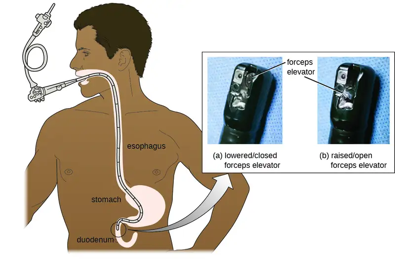
Chapter Review¶
Key Concepts and Summary¶
13.1 Controlling Microbial Growth¶
- Inanimate items that may harbor microbes and aid in their transmission are called fomites. The level of cleanliness required for a fomite depends both on the item’s use and the infectious agent with which the item may be contaminated.
- The CDC and the NIH have established four biological safety levels (BSLs) for laboratories performing research on infectious agents. Each level is designed to protect laboratory personnel and the community. These BSLs are determined by the agent’s infectivity, ease of transmission, and potential disease severity, as well as the type of work being performed with the agent.
- Disinfection removes potential pathogens from a fomite, whereas antisepsis uses antimicrobial chemicals safe enough for tissues; in both cases, microbial load is reduced, but microbes may remain unless the chemical used is strong enough to be a sterilant.
- The amount of cleanliness (sterilization versus high-level disinfection versus general cleanliness) required for items used clinically depends on whether the item will come into contact with sterile tissues (critical item), mucous membranes (semicritical item), or intact skin (noncritical item).
- Medical procedures with a risk for contamination should be carried out in a sterile field maintained by proper aseptic technique to prevent sepsis.
- Sterilization is necessary for some medical applications as well as in the food industry, where endospores of Clostridium botulinum are killed through commercial sterilization protocols.
- Physical or chemical methods to control microbial growth that result in death of the microbe are indicated by the suffixes -cide or -cidal (e.g., as with bactericides, viricides, and fungicides), whereas those that inhibit microbial growth are indicated by the suffixes -stat or-static (e.g., bacteriostatic, fungistatic).
- Microbial death curves display the logarithmic decline of living microbes exposed to a method of microbial control. The time it takes for a protocol to yield a 1-log (90%) reduction in the microbial population is the decimal reduction time, or D-value.
- When choosing a microbial control protocol, factors to consider include the length of exposure time, the type of microbe targeted, its susceptibility to the protocol, the intensity of the treatment, the presence of organics that may interfere with the protocol, and the environmental conditions that may alter the effectiveness of the protocol.
13.2 Using Physical Methods to Control Microorganisms¶
- Heat is a widely used and highly effective method for controlling microbial growth.
- Dry-heat sterilization protocols are used commonly in aseptic techniques in the laboratory. However, moist-heat sterilization is typically the more effective protocol because it penetrates cells better than dry heat does.
- Pasteurization is used to kill pathogens and reduce the number of microbes that cause food spoilage. High-temperature, short-time pasteurization is commonly used to pasteurize milk that will be refrigerated; ultra-high temperature pasteurization can be used to pasteurize milk for long-term storage without refrigeration.
- Refrigeration slows microbial growth; freezing stops growth, killing some organisms. Laboratory and medical specimens may be frozen on dry ice or at ultra-low temperatures for storage and transport.
- High-pressure processing can be used to kill microbes in food. Hyperbaric oxygen therapy to increase oxygen saturation has also been used to treat certain infections.
- Desiccation has long been used to preserve foods and is accelerated through the addition of salt or sugar, which decrease water activity in foods.
- Lyophilization combines cold exposure and desiccation for the long-term storage of foods and laboratory materials, but microbes remain and can be rehydrated.
- Ionizing radiation, including gamma irradiation, is an effective way to sterilize heat-sensitive and packaged materials. Nonionizing radiation, like ultraviolet light, is unable to penetrate surfaces but is useful for surface sterilization.
- HEPA filtration is commonly used in hospital ventilation systems and biological safety cabinets in laboratories to prevent transmission of airborne microbes. Membrane filtration is commonly used to remove bacteria from heat-sensitive solutions.
13.3 Using Chemicals to Control Microorganisms¶
- Heavy metals, including mercury, silver, copper, and zinc, have long been used for disinfection and preservation, although some have toxicity and environmental risks associated with them.
- Halogens, including chlorine, fluorine, and iodine, are also commonly used for disinfection. Chlorine compounds, including sodium hypochlorite, chloramines, and chlorine dioxide, are commonly used for water disinfection. Iodine, in both tincture and iodophor forms, is an effective antiseptic.
- Alcohols, including ethyl alcohol and isopropyl alcohol, are commonly used antiseptics that act by denaturing proteins and disrupting membranes.
- Phenolics are stable, long-acting disinfectants that denature proteins and disrupt membranes. They are commonly found in household cleaners, mouthwashes, and hospital disinfectants, and are also used to preserve harvested crops.
- The phenolic compound triclosan, found in antibacterial soaps, plastics, and textiles is technically an antibiotic because of its specific mode of action of inhibiting bacterial fatty-acid synthesis..
- Surfactants, including soaps and detergents, lower the surface tension of water to create emulsions that mechanically carry away microbes. Soaps are long-chain fatty acids, whereas detergents are synthetic surfactants.
- Quaternary ammonium compounds (quats) are cationic detergents that disrupt membranes. They are used in household cleaners, skin disinfectants, oral rinses, and mouthwashes.
- Bisbiguanides disrupt cell membranes, causing cell contents to gel. Chlorhexidine and alexidine are commonly used for surgical scrubs, for handwashing in clinical settings, and in prescription oral rinses.
- Alkylating agents effectively sterilize materials at low temperatures but are carcinogenic and may also irritate tissue. Glutaraldehyde and o-phthalaldehyde are used as hospital disinfectants but not as antiseptics. Formaldehyde is used for the storage of tissue specimens, as an embalming fluid, and in vaccine preparation to inactivate infectious agents. Ethylene oxide is a gas sterilant that can permeate heat-sensitive packaged materials, but it is also explosive and carcinogenic.
- Peroxygens, including hydrogen peroxide, peracetic acid, benzoyl peroxide, and ozone gas, are strong oxidizing agents that produce free radicals in cells, damaging their macromolecules. They are environmentally safe and are highly effective disinfectants and antiseptics.
- Pressurized carbon dioxide in the form of a supercritical fluid easily permeates packaged materials and cells, forming carbonic acid and lowering intracellular pH. Supercritical carbon dioxide is nonreactive, nontoxic, nonflammable, and effective at low temperatures for sterilization of medical devices, implants, and transplanted tissues.
- Chemical preservatives are added to a variety of foods. Sorbic acid, benzoic acid, propionic acid, and their more soluble salts inhibit enzymes or reduce intracellular pH.
- Sulfites are used in winemaking and food processing to prevent browning of foods.
- Nitrites are used to preserve meats and maintain color, but cooking nitrite-preserved meats may produce carcinogenic nitrosamines.
- Nisin and natamycin are naturally produced preservatives used in cheeses and meats. Nisin is effective against gram-positive bacteria and natamycin against fungi.
13.4 Testing the Effectiveness of Antiseptics and Disinfectants¶
- Chemical disinfectants are grouped by the types of microbes and infectious agents they are effective against. High-level germicides kill vegetative cells, fungi, viruses, and endospores, and can ultimately lead to sterilization. Intermediate-level germicides cannot kill all viruses and are less effective against endospores. Low-level germicides kill vegetative cells and some enveloped viruses, but are ineffective against endospores.
- The effectiveness of a disinfectant is influenced by several factors, including length of exposure, concentration of disinfectant, temperature, and pH.
- Historically, the effectiveness of a chemical disinfectant was compared with that of phenol at killing Staphylococcus aureus and Salmonella enterica serovar Typhi, and a phenol coefficient was calculated.
- The disk-diffusion method is used to test the effectiveness of a chemical disinfectant against a particular microbe.
- The use-dilution test determines the effectiveness of a disinfectant on a surface. In-use tests can determine whether disinfectant solutions are being used correctly in clinical settings.
Multiple Choice¶
13.1 Controlling Microbial Growth¶
1. Which of the following types of medical items requires sterilization?
- needles
- bed linens
- respiratory masks
- blood pressure cuffs
Answer
A
2. Which of the following is suitable for use on tissues for microbial control to prevent infection?
- disinfectant
- antiseptic
- sterilant
- water
Answer
B
3. Which biosafety level is appropriate for research with microbes or infectious agents that pose moderate risk to laboratory workers and the community, and are typically indigenous?
- BSL-1
- BSL-2
- BSL-3
- BSL-4
Answer
B
4. Which of the following best describes a microbial control protocol that inhibits the growth of molds and yeast?
- bacteriostatic
- fungicidal
- bactericidal
- fungistatic
Answer
D
5. The decimal reduction time refers to the amount of time it takes to which of the following?
- reduce a microbial population by 10%
- reduce a microbial population by 0.1%
- reduce a microbial population by 90%
- completely eliminate a microbial population
Answer
C
13.2 Using Physical Methods to Control Microorganisms¶
6. Which of the following methods brings about cell lysis due to cavitation induced by rapid localized pressure changes?
- microwaving
- gamma irradiation
- ultraviolet radiation
- sonication
Answer
D
7. Which of the following terms is used to describe the time required to kill all of the microbes within a sample at a given temperature?
- D-value
- thermal death point
- thermal death time
- decimal reduction time
Answer
C
8. Which of the following microbial control methods does not actually kill microbes or inhibit their growth but instead removes them physically from samples?
- filtration
- desiccation
- lyophilization
- nonionizing radiation
Answer
A
13.3 Using Chemicals to Control Microorganisms¶
9. Which of the following refers to a disinfecting chemical dissolved in alcohol?
- iodophor
- tincture
- phenolic
- peroxygen
Answer
B
10. Which of the following peroxygens is widely used as a household disinfectant, is inexpensive, and breaks down into water and oxygen gas?
- hydrogen peroxide
- peracetic acid
- benzoyl peroxide
- ozone
Answer
A
11. Which of the following chemical food preservatives is used in the wine industry but may cause asthmatic reactions in some individuals?
- nitrites
- sulfites
- propionic acid
- benzoic acid
Answer
B
12. Bleach is an example of which group of chemicals used for disinfection?
- heavy metals
- halogens
- quats
- bisbiguanides
Answer
B
13. Which chemical disinfectant works by methylating enzymes and nucleic acids and is known for being toxic and carcinogenic?
- sorbic acid
- triclosan
- formaldehyde
- hexaclorophene
Answer
C
13.4 Testing the Effectiveness of Antiseptics and Disinfectants¶
14. Which type of test is used to determine whether disinfectant solutions actively used in a clinical setting are being used correctly?
- disk-diffusion assay
- phenol coefficient test
- in-use test
- use-dilution test
Answer
C
15. The effectiveness of chemical disinfectants has historically been compared to that of which of the following?
- phenol
- ethyl alcohol
- bleach
- formaldehyde
Answer
A
16. Which of the following refers to a germicide that can kill vegetative cells and certain enveloped viruses but not endospores?
- high-level germicide
- intermediate-level germicide
- low-level germicide
- sterilant
Answer
C
Fill in the Blank¶
13.1 Controlling Microbial Growth¶
17. A medical item that comes into contact with intact skin and does not penetrate sterile tissues or come into contact with mucous membranes is called a(n) ________ item.
Answer
noncritical
18. The goal of ________ ________ protocols is to rid canned produce of Clostridium botulinum endospores.
Answer
commercial sterilization
13.2 Using Physical Methods to Control Microorganisms¶
19. In an autoclave, the application of pressure to ________ is increased to allow the steam to achieve temperatures above the boiling point of water.
Answer
steam
13.3 Using Chemicals to Control Microorganisms¶
20. Doorknobs and other surfaces in clinical settings are often coated with ________, ________, or ________ to prevent the transmission of microbes.
Answer
copper, nickel, zinc
13.4 Testing the Effectiveness of Antiseptics and Disinfectants¶
21. If a chemical disinfectant is more effective than phenol, then its phenol coefficient would be ________ than 1.0.
Answer
greater
22. If used for extended periods of time, ________ germicides may lead to sterility.
Answer
high-level
23. In the disk-diffusion assay, a large zone of inhibition around a disk to which a chemical disinfectant has been applied indicates ________ of the test microbe to the chemical disinfectant.
Answer
susceptibility or sensitivity
True/False¶
13.1 Controlling Microbial Growth¶
24. Sanitization leaves an object free of microbes.
Answer
False
13.2 Using Physical Methods to Control Microorganisms¶
25. Ionizing radiation can penetrate surfaces, but nonionizing radiation cannot.
Answer
True
26. Moist-heat sterilization protocols require the use of higher temperatures for longer periods of time than do dry-heat sterilization protocols do.
Answer
False
13.3 Using Chemicals to Control Microorganisms¶
27. Soaps are classified as disinfectants.
Answer
False
28. Mercury-based compounds have fallen out of favor for use as preservatives and antiseptics.
Answer
True
Short Answer¶
13.1 Controlling Microbial Growth¶
29. What are some characteristics of microbes and infectious agents that would require handling in a BSL-3 laboratory?
30. What is the purpose of degerming? Does it completely eliminate microbes?
31. What are some factors that alter the effectiveness of a disinfectant?
13.2 Using Physical Methods to Control Microorganisms¶
32. What is the advantage of HTST pasteurization compared with sterilization? What is an advantage of UHT treatment?
33. How does the addition of salt or sugar help preserve food?
34. Which is more effective at killing microbes: autoclaving or freezing? Explain.
13.3 Using Chemicals to Control Microorganisms¶
35. Which solution of ethyl alcohol is more effective at inhibiting microbial growth: a 70% solution or a 100% solution? Why?
36. When might a gas treatment be used to control microbial growth instead of autoclaving? What are some examples?
37. What is the advantage of using an iodophor rather than iodine or an iodine tincture?
13.4 Testing the Effectiveness of Antiseptics and Disinfectants¶
38. Why were chemical disinfectants once commonly compared with phenol?
39. Why is length of exposure to a chemical disinfectant important for its activity?
Critical Thinking¶
13.1 Controlling Microbial Growth¶
40. When plotting microbial death curves, how might they look different for bactericidal versus bacteriostatic treatments?
41. What are the benefits of cleaning something to a level of cleanliness beyond what is required? What are some possible disadvantages of doing so?
13.2 Using Physical Methods to Control Microorganisms¶
42. In 2001, endospores of Bacillus anthracis, the causative agent of anthrax, were sent to government officials and news agencies via the mail. In response, the US Postal Service began to irradiate mail with UV light. Was this an effective strategy? Why or why not?
13.3 Using Chemicals to Control Microorganisms¶
43. Looking at Figure 13.29 and reviewing the functional groups in Figure 7.6, which alkylating agent shown lacks an aldehyde group?
44. Do you think naturally produced antimicrobial products like nisin and natamycin should replace sorbic acid for food preservation? Why or why not?
45. Why is the use of skin disinfecting compounds required for surgical scrubbing and not for everyday handwashing?
13.4 Testing the Effectiveness of Antiseptics and Disinfectants¶
46. What are some advantages of use-dilution and in-use tests compared with the disk-diffusion assay?
Adapted from Microbiology by OpenStax, licensed under CC BY 4.0. Access the original for free at openstax.org. Changes: converted to the web reading format of The Open Book Project.
-
R.E. Stephenson et al. “Elucidation of Bacteria Found in Car Interiors and Strategies to Reduce the Presence of Potential Pathogens.” Biofouling 30 no. 3 (2014):337–346. ↩
-
US Centers for Disease Control and Prevention. “Recognizing the Biosafety Levels.” http://www.cdc.gov/training/quicklearns/biosafety/. Accessed June 7, 2016. ↩
-
US Department of Agriculture. “Freezing and Food Safety.” 2013. http://www.fsis.usda.gov/wps/portal/fsis/topics/food-safety-education/get-answers/food-safety-fact-sheets/safe-food-handling/freezing-and-food-safety/CT_Index. Accessed June 8, 2016. ↩
-
C. Ferstl. “High Pressure Processing: Insights on Technology and Regulatory Requirements.” Food for Thought/White Paper. Series Volume 10. Livermore, CA: The National Food Lab; July 2013. ↩
-
US Food and Drug Administration. “Kinetics of Microbial Inactivation for Alternative Food Processing Technologies: High Pressure Processing.” 2000. http://www.fda.gov/Food/FoodScienceResearch/SafePracticesforFoodProcesses/ucm101456.htm. Accessed July 19, 2106. ↩
-
CL McCarty et al. “Large Outbreak of Botulism Associated with a Church Potluck Meal-Ohio, 2015.” Morbidity and Mortality Weekly Report 64, no. 29 (2015):802–803. ↩
-
AM Johnson et al. “Consumer Acceptance of Electron-Beam Irradiated Ready-to-Eat Poultry Meats.” Food Processing Preservation, 28 no. 4 (2004):302–319. ↩
-
US Food and Drug Administration. "FDA Issues Final Rule on Safety and Effectiveness of Antibacterial Soaps." 2016. https://www.fda.gov/news-events/press-announcements/fda-issues-final-rule-safety-and-effectiveness-antibacterial-soaps. Accessed October 29, 2020. ↩
-
J. Stromberg. “Five Reasons Why You Should Probably Stop Using Antibacterial Soap.” Smithsonian.com January 3, 2014. http://www.smithsonianmag.com/science-nature/five-reasons-why-you-should-probably-stop-using-antibacterial-soap-180948078/?no-ist. Accessed June 9, 2016. ↩
-
SP Yazdankhah et al. “Triclosan and Antimicrobial Resistance in Bacteria: An Overview.” Microbial Drug Resistance 12 no. 2 (2006):83–90. ↩
-
L. Birošová, M. Mikulášová. “Development of Triclosan and Antibiotic Resistance in Salmonella enterica serovar Typhimurium.” Journal of Medical Microbiology 58 no. 4 (2009):436–441. ↩
-
AB Dann, A. Hontela. “Triclosan: Environmental Exposure, Toxicity and Mechanisms of Action.” Journal of Applied Toxicology 31 no. 4 (2011):285–311. ↩
-
US Centers for Disease Control and Prevention. “Triclosan Fact Sheet.” 2013. http://www.cdc.gov/biomonitoring/Triclosan_FactSheet.html. Accessed June 9, 2016. ↩
-
EM Clayton et al. “The Impact of Bisphenol A and Triclosan on Immune Parameters in the US Population, NHANES 2003-2006.” Environmental Health Perspectives 119 no. 3 (2011):390. ↩
-
N. Silvestry-Rodriguez et al. “Silver as a Disinfectant.” In Reviews of Environmental Contamination and Toxicology, pp. 23-45. Edited by GW Ware and DM Whitacre. New York: Springer, 2007. ↩
-
B. Owens. “Silver Makes Antibiotics Thousands of Times More Effective.” Nature June 19 2013. http://www.nature.com/news/silver-makes-antibiotics-thousands-of-times-more-effective-1.13232 ↩
-
C. Seiler, TU Berendonk. “Heavy Metal Driven Co-Selection of Antibiotic Resistance in Soil and Water Bodies Impacted by Agriculture and Aquaculture.” Frontiers in Microbiology 3 (2012):399. ↩
-
World Health Organization. “Benefits and Risks of the Use of Chlorine-Containing Disinfectants in Food Production and Food Processing: Report of a Joint FAO/WHO Expert Meeting.” Geneva, Switzerland: World Health Organization, 2009. ↩
-
RE Marquis. “Antimicrobial Actions of Fluoride for Oral Bacteria.” Canadian Journal of Microbiology 41 no. 11 (1995):955–964. ↩
-
L. Thomas et al. “Development of Resistance to Chlorhexidine Diacetate in Pseudomonas aeruginosa and the Effect of a ‘Residual’ Concentration.” Journal of Hospital Infection 46 no. 4 (2000):297–303. ↩
-
Institute of Medicine. “Long-Term Health Effects of Participation in Project SHAD (Shipboard Hazard and Defense).” Washington, DC: The National Academies Press, 2007. ↩
-
Yao, C.S. et al. “In vitro antibacterial effect of carbamide peroxide on oral biofilm.” Journal of Oral Microbiology Jun 12, 2013. http://www.ncbi.nlm.nih.gov/pmc/articles/PMC3682087/. doi: 10.3402/jom.v5i0.20392. ↩